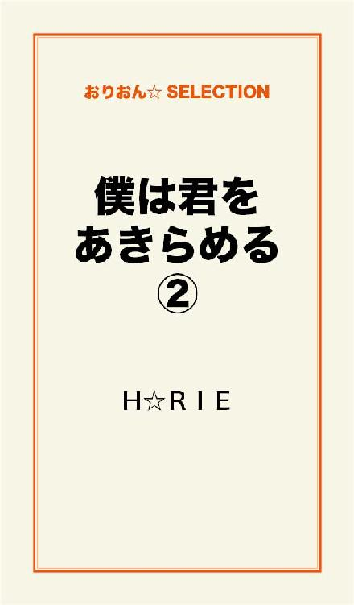

| 僕は君をあきらめる 完全版 | |
| H☆RIE | |
この本は横書きでレイアウトされています。
また、ご覧になる機種により、表示の差が認められることがあります。
...
ここで、誓い合った。
ここから、また始める約束だった。
やっぱり、来てしまった。
夕陽が、攻めてくる。
でも、振り返るのが怖くて......
遠くまで、姿を探してしまいそうで。
波の飛沫が、時々足元までふりかかる。
あの日の誓いを
どうしても忘れる事ができなかった。
...
ただのＢＦじゃない。
将来を誓い合った
恋人なんだよ。
...
「美香ちゃん、知ってた？ 今日取り壊しですって」
ママが心配そうに私の顔を伺う。
「連絡......ないの？」
ん、力なく頷いた。
「本当にどうなってるのかしらね。誰も知らないなんて。いくら裁判中だからって......お宅にも、もう誰もいないんでしょう？」
ママの言葉を遮るように立ち上がり、小走りで玄関へ向かった。
「あたし、ちょっとみてくる」
私、若林美香。
もうすぐ高校を卒業する。
この春から、医療系の大学へ入学する予定だ。
あくまでも、予定。
そのことで、今、家族が揉めに揉めている。
パパは大学で、講師をしながら薬の研究をしているんだけど、数年前の研究が、なんかすごい発明だったらしく、注目されはじめた。
それで、この春から東京の大学に招聘されて行くことが決定した。
ママはこの町の名家の娘で、生粋のお嬢様育ち。
のんびり、おっとりしている。
だから私が、変にしっかり者になっちゃったのかな。
そんなママも、今回はパパに協力するってはりきっている。
......でも私は、この町に残りたい。
ここにいなければならない理由がある。
海岸沿いの道から右に折れ、小高い丘に向かってひた走る。
敷地は、背の高いシートで囲われていた。
『桜田病院』の看板の上半分が見える。
出入り口になっているところから、中を覗くと、重機が何台も駐車されている。
昼休みなのか、今は静まり返っていた。
「もう、ロータリーがなくなってる......」
一人つぶやいて、建物をみあげた。
......間に合うかもしれない。
「すいません！」
大きな声で、ヘルメットを被った作業員に声をかけた。
「あの、お願いがあるんですけど、建物に上る事は、まだ出来ますか？」
「ああ？ 関係者のひと？ どーだかな～。今、お偉いさんが来てるからネエちゃん自分で聞いてみな」
指差すほうをみると、スーツ姿のスラッとした
ビジネスマンが立っていた。
大きな紙をひろげて指示を出している。
打ち合わせでもしているのか。
私は、走りよった。
「あの......すみません」
スーツの男が振り返った。
偉いさんといわれるには似合わない。
20代そこそこにみえた。
「若林といいます。お願いがあるんですけど、聞いてもらえますか？」
彼は、人懐こい、優しい笑顔で近寄ってきてくれた。
「どうも。わたくし、小野といいます。ご近所のかたですか？ 工事中で、ご迷惑おかけしております。何でしょうか？」
「建物に上りたいんです。屋上に、あの、取りに行きたいものがあるんです。すごく、大事なものなんです。まさか、取り壊すなんて思ってなくて......」
彼はう～んといいながら、予定表を見上げた。
「建物は明日の予定だから、大丈夫ですが......備品はおそらく撤去済みだと思いますよ。関係者の方なのかな」
「あの、将来、ここに嫁入りする予定だったんですっ！」
思い切って言ってしまった。
小野はちょっと間をおいて、微笑みながら頷いた。
「わかりました。では、危険なので、わたくしもご一緒しましょう」
そう言って、ヘルメットを２つ手に取った。
「ホントですか？ ありがとうございます」
私は、先に立って、非常階段へ向かった。
「中からじゃ、行けないんです」
階段を昇りはじめると、想い出がジンジン襲ってきた。
......懐かしい。
何回ここを昇ったかな。
屋上に着いた。
金網の鍵を慣れた手つきで開ける。
あの、貯水槽の裏。
足早に近づく。
「あ......った」
...
初めて
キスをしたのも
この場所だった。
...
いつも放課後は、ここで二人で過ごした。
彼、桜田英司は、ひとつ上の先輩。
抜群に優秀で、スポーツマンで、背も高くてかっこいい。
しかも、病院の跡取り息子。
当然、みんなの憧れの的だった。
私も、その一人だった。
私といえば、いわゆる『堅物』。
勉強は出来たし、しっかり者でとおっていたので、いつも、リーダー的存在。
ただ、近寄りがたいタイプだったのかもしれない。
心を許せる友達がいなかった。
ママはパパにベッタリだし。
唯一甘えられる存在のパパは、その頃忙しくて、あまり相手をしてもらえなかった。
本音はさみしかった。
誰かに甘えたかった。
だから、いつも海を見に公園に立ち寄った。
海は、私を癒してくれる。
やさしく包んでくれる。
「毎日、ここにいるよね」
突然、後ろから声がした。
「え？」
振り向いた私は、びっくりして、次の言葉が出てこない。
だって、憧れの先輩、英司が立っていたから。
「あそこから、見えるんだ」
病院を指差した。
「屋上でいつもみてた。ずっと、気になってた。いつも、何してるの？」
顔をあげると、すごく優しい目をして私をみていた。
「あの、元気をもらってる......んです。海に」
彼は、ニッコリ笑って、
「じゃあ、明日から、僕といっしょにみようよ。どう？ 若林美香さん」
顔が赤くなるのが、自分でもわかった。
ドキドキが急激に襲ってきた。
それが、英司との出会い。
初めての接点。
彼が、私の名前を知っていたのにも驚いた。
本当にうれしかった。
彼もまた、一人で、病院の屋上で、同じ気持ちで海を眺めていたのだ。
その日から、放課後や休みの日は二人で過ごすようになった。
海の公園で。
そして、この屋上で。
英司と過ごす時間は、楽しかった。
素直に甘えられた。
いつのまにか、お互いが、自分の本当の姿をみせられる、唯一無二の存在になっていた。
彼がすべてだった......。
だから、英司が医師になるために海外へいく決意をしたときも、素直に受け入れる事ができた。
心から、信じていたから。
必ず、迎えにきてくれる。
離れていても、この想いは絶対に揺るがない。
小野の存在を忘れていた。
振り向くと、こちらをみて微笑んでいる。
「これ？ このベンチ？」
「はい」
「手作り？」
「はい。彼と作ったんです。ホームセンターで、キットを買ってきて。イニシャルも彫ってあるんですよ。持って帰りたいんですけど、いいですか？」
「いいですけど、どうやって運ぶつもり？」
「持てます。ダイジョブです」
いざ、持ち上げてみると、結構重い。
歩いて運ぶとなると、ひとりじゃ無理だ。
......どうしよう。
「君、若林さんってつきあたりのお屋敷の娘さん？」
「は......はい。お屋敷ってほどじゃ......」
「わかりました。あとで、届けに行きますよ」
「え？ でもそんなご迷惑かけるわけには......」
「実は今晩、お宅に伺う予定なんです」
「不動産屋さんもやってるんですか？」
「まあ。そんなもんです。だから、任せてください」
「......ここ、いい眺めですね」
小野はぐるっと辺りを見渡した。
「そうなんです。夕日がすごくキレイで。いつもここで学校帰りデートしてたんです」
今までいろいろと我慢してきたからなのか、涙が溢れてきた。
「ごめんなさい。思い出しちゃって......」
「もしかして、この病院の息子さんと付き合ってたんですか？」
「ええ、でも彼、今、アメリカで医者になるために留学していて、もう、１年くらい会ってないんです......」
ちょっと首をかしげて、小野は言った。
「じゃあ、今回のことがあって、......その彼、大丈夫なんですか？ 連絡きましたか？」
「......」
「ああ、よけいなことでしたよね。申し訳ない」
「いえ、いいんです。連絡は、事件が明るみにでたころからなくなっちゃって......実は、音信不通......なんです。でも、大丈夫です。約束してるから」
「約束？」
「迎えに来てくれるって約束してるから。信じてるから」
ふっと笑われたような気がした。
「子供が何言ってんだって顔してますね。子供だって、真剣なんですよ」
「そんなつもりはないですよ。いい話だなって」
「彼がお医者さんになって戻ってくるまで、この町で待ってなくちゃなんです。そしたら、あの海の公園で待ち合わせするんです！」
海岸の右側にある公園を指差した。
「じゃ、５～６年ってこと？ 長いですね」
私はため息を付いて、座り込んだ。
「長いです......」
「ああ、そうか。だからなのか」
急に小野が納得するような口調で話し始めた。
「君が反対してるんですね、引越し」
「引越し？ そうじゃなくて、ここに居たいだけ。だって、この病院もなくなっちゃうし、あの家で待たないと。彼が迎えに来てくれたとき困っちゃうじゃないですか！？」
昼休みが終わったのか、下が騒がしくなってきた。
重機の音が聞こえ始める。
「この跡地には、リゾートホテルが建つ予定なんですよ。隣の住居部分も含めてです。それで、その経営者の住居を探すのもわたくしの仕事のひとつでして......まあ、詳しい話は、後ほどにしましょう」
......そうか、家も壊しちゃうんだ。
もう誰もいないんだもんね。
小野は非常階段に向かって歩き出していた。
「あの、小野さん、貴重なお時間にお手数かけさせてしまって......ありがとうございました。恋バナまできいてもらっちゃって、おかげで少しすっきりしました」
「恋バナか......結構好きだからＯＫですよ。じゃ、コレは間違いなく届けるから、安心してください」
「はい。よろしくお願いします」
...
それは
突然に
襲ってきた。
...
部屋の模様替えをして、ベンチの置き場所を考えていた。
ちょっとだけ、ウキウキとしていた。
夢中になっていて、そのとき、携帯のメロディに気づかなかった。
玄関のチャイムが鳴った。
パパだ。
「おかえりなさーい」
「ただいま、なんだ、機嫌よさそうだな。決心してくれたのか？」
「え、なにが？ 考えはかわってませ～～ん」
パパとママが困った顔で顔を見合す。
「でも、この家に美香ひとりで住まわせるわけにはいかないよ。危険だし」
「この町から、出たくないの。あたしは！！」
「あとで、不動産屋さんが来るんだよ、だから、もう決めておかないと」
私は返事をしないで、再び自分の部屋に戻った。
出発まで、１週間をきっていたあの日。
私のバースデイ。
この部屋で、二人で過ごした。
英司は両手で私の頬をやさしく包みこんで言った。
「美香の全部、刻み付けていきたい」
迷わず、頷いた。
だって、それがとても自然だったから。
何度もキスをした。
何度も抱きしめあった。
彼の優しい手。
肌のぬくもり。
あの時、本当に幸せだった。
忘れられない。
会いたい。
抱きしめてもらいたい。
......英司、今、どうしてるんだろう。
どうして連絡くれないんだろう。
ベッドによりかかると、目の端でチカチカと光っているモノ......携帯だ！
......メール？
英司からだ！！
１時間前？
気づかなかった。
あわてて、プッシュする。
メールには、１行だけ、文字があった。
「意味が、わからない。これ、どういうこと？」
独り言をいってみる。
でもアタマでは解ってしまっていた。
「何、コレ......」
......ウソだよね。
コールしてみる。
『～おかけになった電話番号は、現在使われておりません』
無情なアナウンス。
もう一度。
同じだった。
「あたし......嫌。イヤ......」
涙があとからあとから溢れて、床にポタポタ落ち始めた。
頭をかかえて泣き崩れてしまう。
夢？
現実？？
そのとき、玄関のチャイムが鳴った。
...
最初は
ほんの
気まぐれだった。
...
ひととおり挨拶を済ませて、住居についての説明を始めた。
「賃貸というかたちでも、購入というかたちでもかまわないそうです。どうされますか？」
「でも、娘が......」
父親が困り顔で答えた。
「その件についてですが、わたくしに説得させてもらえませんか？ 実は、さきほどお嬢様と友達になったんですよ」
「え？ それは、どういう......？」
笑いながら答えた。
「たぶん納得していただける話を持ってきました。どちらにいらっしゃいますか？」
「部屋にいると思うんですが......なにかバタバタやってましたから。呼んできますね」
母親が立ち上がって２階へと上がって行った。
しばらくして、戻ってくるが神妙な顔をしている。
「どうしました？」
「泣いてるみたいなんです。返事がなくて」
「わたくしが行ってみてもよろしいですか？」
僕は２階へあがり、部屋をノックした。
「美香さん、小野です。空けてもらえますか？」
返事がない。
「約束のもの、持ってきましたよ」
カチャっとドアがひらく。
「もう、いらなくなっちゃったみたい......」
泣きはらしてぐちゃぐちゃになった顔。
「どうしたんですか？ そんなになって。何かあった？」
傍らに近寄っていった。
「これ、どういう意味？」
差し出されたメール画面には、"僕は君をあきらめる"。
１行だけ書かれていた。
「あたし、ふられたのかな？ 嫌われた......？ 電話も通じないの」
一息吐いて、言う事に決めた。
何もかも、知っていることは話してあげたほうがいいのかも知れない。
「美香さん。実は、少し調べたんです。彼は、桜田英司くんは、日本に帰って来ています。お家があのようになってしまっては、勉学もおそらく続けられる状態ではないでしょう。ご両親は入院してるそうです。かなり、大変な状態だと思われますよ」
「そんな......」
真剣に自分の話を聞いていた美香の瞳がさらにうるんで、涙があふれ出る。
なんで......
どうして......
ひどいよ......
いろんな言葉をつぶやく。
涙をぬぐおうともしない。
掛けてあげる言葉がみつからなかった。
今日、出会ったばかりの自分にこんなにも無防備な姿をみせる美香に、心がうごめく。
最初は、ほんの気まぐれだった。
ひさしぶりに、可愛らしい恋バナなんて聞いたせいもあるのかもしれない。
今回のコーディネイトの仕事のサービスの一部くらいにしか考えていなかったのに。
そんな君から、目が離せなくなっていた。
......ただ、見守りたくなった。
...
あたし
これから
どうすればいいの。
...
一晩中、眠れなかった。
これからどうしよう。
悲しみがいっぱいすぎて、何も考えられない。
......海に行こう。
急に思い立った。
海の公園へ向かう。
二人の思い出の場所へ。
早朝のスッとした空気がからだを包む。
公園の先端は、沖に向かって長くのびていて、そこに立つと、まるで海の上に立っているような感じがする。
ゆっくり歩き進んでいった。
朝早いのにもかかわらず、先客が居た。
かまわず一番先まで進み、柵にもたれる。
「はーー」
ため息しか出て来ない。
胸の中に、重い塊がある。
目の前に広がる地平線。
......きれいな、青。
この海を一緒に眺める事はもうできないのかな。
背後から誰か近づいて来た。
「美香さん？」
「え？」
振り向くと、先に来ていた男の人。
一瞬誰かわからない。
「あ、小野さん。おはようございます。ラフなカッコだからわかんなかった」
「おはよう。少しは落ち着いた？」
小野は、丁寧語じゃなくなり、ふつうの口調になっていた。
「昨日は、みっともないトコいっぱい見せちゃってごめんなさい。あと、いろいろとありがとうございました」
「まだ、泣いてるね。仕方ないか」
私は、袖口で顔をぬぐった。
ほっぺたがヒリヒリする。
「小野さん、何してるんですか？ もしかして、釣り？」
「そうだよ。変かな」
「ここ、釣れませんよ」
「え、そうなの？」
「もっと、あっちの岩場の方に行かないと」
「じゃあ、今度案内してもらおうかな」
「いいですよ。...ってここに住んでるんですか？」
「もともとは、東京。今の仕事が一段落したら、戻るけれど、うーん４月あたまくらいまでは居る予定かな」
「東京か......」
「美香さん、こんな事言って差し出がましいかもしれないけど、もう、この町に固執する理由はないんじゃない？」
思わずうつむいた。
そう、そうなんだけど。
「彼、東京にいるらしいよ」
「え？」
どうして、そんなこと知ってるんだろう。
この人って......？
「小野さんって、何やってる人なんですか？」
「僕？ まあ、メインは壊し屋かな」
「壊し屋！？」
「ビルの解体とか......あと、コーディネーターみたいな事や、調査会社もやってる」
「ヘェ～、だから不動産屋さんみたいな事もやるんだ。探偵みたいなこともするの？」
「まあね」
そうか、だから英司のことも調べられたんだ。
もう、ここで待っていても無駄なのかもしれない。
自分から動かないと英司に会うことは出来ないんだ。
会いたい......。
会ってちゃんと話がしたい。
それなら......
「思い切って、ご両親と一緒に引越ししてみれば？」
小野は笑って、ひゅっと竿を振った。
「うん......そうしようかな」
「ほんとに？」
「ウジウジしてても仕方ないもんね」
「そう！！ じゃあ、僕が責任持って住居をさがすよ。今日また、お宅に行く事になってるから」
早速帰り支度を始めた。
「帰って、いろいろ調べないと」
なんだかはりきってる。
この人の笑顔は、癒される系だな。
つられてしまう。
「あたし、もう少しここにいます」
「じゃあ、あとで」
足早に去っていく後姿を見送り、私はもう一度、海の彼方をみつめた。
東京へ行けば、きっと、英司に会える......。
......
僕は今
どうして
ここにいるんだろう。
...
ここ数週間の出来事が、未だ実感できない。
窓の外にみえる、ビルの森。
薄汚れた空。
「......と、だいたいこういう事でいいかな、英司君」
篠宮教授に名前をよばれ、ハッと我に返る。
「は、はい。何から何まで、ありがとうございます」
深々と頭を下げた。
......父の病院が消滅した。
『薬品横流し疑惑』。
『脱税疑惑』。
さらに追い討ちをかけるような、『医療事故』。
あの規模の町病院が、没落していくのはあっという間だった。
母は心労で倒れた。
父もまた、過労と新たな発病。
ともに入院を余儀なくされた。
病院、自宅などの不動産は売却され、勤務していた職員の保障、事故の保障などに充てられた。
むしろ、まだ不足しているくらいだ。
留学などしている場合ではない。
......父がそんな事をするはずはない。
誰かに嵌められてしまったに違いないのだ。
だが、自分には、それを確かめる術もない。
"真実を絶対つきとめる"。
そう、心に決めた。
それには、今の状況をまずはどうにかしなければならかった。
篠宮教授は、父の古い友人で、この大学の医学部長と理事を務めており、さらに病院の経営もしている。
父の状況を知り、すぐに援助を申し出てくれた。
自分が20歳そこそこということもあり、雑務処理も代行してくれている。
まさに『恩人』である。
「君は、ずいぶんと優秀らしいね。向こうの知人が、帰国したのを残念がっていた。まだ、向こうに居たかっただろうが......」
「いえ、今の僕にはそんな選択の余地はありませんから。ここで、勉学を続けさせていただけるだけで、もう、感謝しています」
「まあ、落ち着いたら、また修行にでもでればいい。とにかく早く一人前にならないとな」
「はい、頑張ります」
何度も頭を下げるしかなかった。
ふと、美香のことを思った。
喧騒な毎日だったが、思い出さなかった日はない。
心配しているだろう。
でも、自分が言える言葉は突然なくなってしまった。
自分を信じて待っている彼女を悲しませたくない。
どうしたらいいのか、わからない......。
「英司君、ひとつ、君に頼みたいことがあるんだ」
「はい、僕にできる事があれば、何でもします」
「実は、私事なんだが......娘のことなんだ。こんな、交換条件のようなお願いは本意ではないんだがね......」
言いにくそうにしている。
何が言いたいのか、すぐに予測できた。
やっぱり......。
ドアがノックされるなり、派手な女子校生が、ズカズカと入ってきた。
「パパ～？ 話って何～？ 超忙しいんだけど、早めに終わる～？」
なんだ、この頭悪そうなヤツは。
「ああ、茉莉、早かったね。こっちにおいで」
とたんに教授の顔が緩む。
茉莉は知らんぷりをして、携帯をいじっている。
「娘の茉莉だ。４月からここに入学する。残念ながら、医学部ではないんだがね。母親を早くに亡くしてしまったから、甘やかしてしまってね。我がままで、頭痛の種なんだよ」
そう言いながらも、目を細めて、可愛くて仕方ないのがよくわかる。
「茉莉！ こちらが、この前話した息子さんだ」
やっと、こちらに歩いて来た。
携帯を持ったままだ。
「初めまして、桜田英司です」
ふ～んという顔をして、視線を上から下へ移し、
「茉莉です。よろしく」
ニコっと笑った。
「思ったより、イケメンだった。よかった～。一応、あれでしょ、婚約者（仮）だもんね」
......ああ、やっぱりそうなのか。
教授の顔を伺い見る。
「まあ、あんまり堅苦しく考えないでくれ。本来なら、娘に医師になってもらいたいところなんだが、このとおりでね。わたしの希望としては、優秀な君に任せてもいいかと思っている。だからといって、無理強いするつもりはないんだよ。娘にも『いい人』が出来て、その人といっしょになりたいというなら、反対するつもりはないんだ」
「はあ......」
「まだまだ先の話だがね。なんと言うか、とりあえずは、世話役というか、それを頼みたいんだ。悪い虫がつかないように見張ってて貰いたいというか......、いいかね？」
「はい」
そう言うしかない。
「ねぇ、パパ。優先順位は、あたしが一番なわけ？」
突然、茉莉が話に割って入ってきた。
「あ？ まあ、学業にあまり支障がないようにしてくれよ。医学部は大変なんだからな」
「は～い。了解。そっちの話はもうお終い？ 彼と話していいかな」
「ああ。じゃ、英司くん、また何かあったら呼ぶから。よろしく頼むよ。今から、出かけるから、この部屋を使いなさい」
教授は早々に出て行ってしまった。
......召使？
執事みたいなものか。
医者の娘とは思えない。
見た目は美人だが、高慢な印象が、前面に出ている。
美香とはえらい違いだ。
「勘違いしないでね。出るトコ出れば、ちゃんと『お嬢様』できるから。なんだこの女、とか思ってるでしょ？」
「いや、そんな事は......」
「ねぇ、車の免許は？」
「向こうで取りました」
「そう。じゃ、車はパパに買ってもらうから、届いたら取りにきて」
「はい」
「送り迎えとか、してもらうし。買い物とかもつきあってもらうかも。英司、イケメンだからよかった。ブサかったら却下だったわ！」
「却下？」
「だって、要するに、婚約者、かっこ、仮、なんだよ。結婚前提ってやつよ」
茉莉は意地悪そうに笑っている。
「まだわからないの？ パパがあたしにオモチャをくれたってコト！ あたしの嫌がる事をしたら、お終いよ」
......そうか。
そういう事なのか。
我慢しなければならないのか。
どんなことも。
「わかりました。呼び方は、『茉莉さん』でいいですか？」
「うん、そうね。あ、大事なこと忘れてた。英司、彼女はいるの？」
返事が遅れた。
「いや、え......」
「いるよね」
「はい。地元だったところに、います......けど。もう１年以上会ってないし、最近は連絡もしてないし......」
「いる事には変わりないでしょ」
仕方なく、頷いた。
茉莉は、立ち上がり、目の前にきた。
「携帯、出して」
言われるまま、ポケットから取り出す。
「連絡先ですね」
「メール、打って？」
「え？」
「その彼女に。早く」
「なにを？」
「別れのメールに決まってるでしょ！！」
「あ......」
逆らえないのだ。
従うしかないのだ。
指先が震える。
「そうね～うん。いい言葉思いついた、貸して！」
茉莉は、携帯を奪うと、素早く文を打った。
「ほら、いいでしょ？」
目の前に携帯の画面を突きつけられる。
「はい、押して。やだ、震えてるの？ ここ、押すだけよ」
無理やり、親指を『送信』のボタンに充てさせる。
......送信、してしまった。
その文面は、今の自分のすべてを語っていた。
"僕は君をあきらめる"
バキっと音がした。
茉莉が携帯を二つ折りに壊した音だった。
「じゃ、新しいの、買いに行きましょ？」
ゴミ箱にそれを放り投げると、満足そうな態度で、歩き出した。
美香、美香、ごめん。
今の自分には、何もない。
どうにもならない。
あの日の誓い。
約束。
夕日を、青い海を思い出した。
自分で消してしまった......。
このまま何もかも投げ出して、美香を連れて、どこかへ逃げてしまいたい。
そんな衝動にかられた。
彼女は付いてきてくれるだろう。
二人でいられれば、どこでもかまわない。
こんな屈辱的な生活が、この先続くのだから。
......無理だ。
両親は？
病院の後始末は？
放ってしまう訳にはいかない。
堂々巡りだ。
茉莉のあとに重い足取りで続く。
正面から、手を振りながら誰か近づいてきた。
「あー、和也！」
茉莉の態度が一変したように感じた。
「いいとこきた～、買い物つきあってくれる？ 車できてるんでしょ」
「いいけど。あ、彼？ 例の......」
「桜田英司です」
「結城和也っていいます。よろしく。君と同じ学部で同学年なんだ」
いい人そうだ。
「なんか、元気ない？ ......コイツ、何かした？」
苦笑いするしかない。
「ねー、だから買い物！」
「わかったよ。なにを買いに行くの？」
「えっとね。携帯と車」
和也がわかったというような顔をしてこっちを見た。
茉莉がとたんにウキウキしながら、歩き出す。
...
空気がまずい。
水がまずい。
でも決めた。
私はここで頑張る。
...
もう一度、英司に会いたい。
ちゃんと話がしたい。
あきらめるなんて無理。
あと５年以上は会えないって、そう思ってたんだもん。
まだ、大丈夫。
パパとママは、大学側で用意してくれた住居に引っ越した。
一緒に上京して、大学に入学することを条件に、一人暮らしを許してもらった。
ベランダの窓を空け放す。
生ぬるい潮風が部屋に充満する。
川沿いのマンションの10階。
東京湾がみえる。
小さい玄関から、右側がキッチン。
左側がＢ＆Ｔ。
10畳ほどのリビングと寝室の１ＬＤＫ。
寝室の窓側に、机を置いた。
収納も充実してるし、一人なら充分な広さだ。
「美香ちゃん、少しは片付いた～？」
「あ、来てくれたんですか！」
小野が玄関先に現れた。
カジュアルな格好をしていると、大学生くらいにみえる。
「そんなに荷物ないから、今日中にはなんとかなりそうです。部屋、気に入りました。海がみえるし。ホントに、何から何までお世話になっちゃって......ありがとうございました」
「全然、違う海だけどね、みえた方が落ち着くかなと思ったんだ」
「ええ、両親の家も、大学も近いし、完璧です！」
「お父様と違う場所の校舎なんだって？」
「いいんです。かえってその方が、面倒が少ないから。あと、一人になって、やりたいことがあるから」
「やりたいこと？」
「はい！ それはあとでお話しします」
小野は、私の説得をしたうえに手際のよい仕事と配慮で、両親の信頼を受けていた。
いまや、お目付け役といったところになっている。
「さ、手伝うよ。早く片付けて、ご飯でも食べに行こう」
小野は、腕まくりをしながら、いつもの笑顔で私をみた。
「あ、これ、持ってきたんだ」
ベンチを見つけられてしまった。
「だって、せっかく運んで貰ったし。やっぱり思い入れがあるから」
「まあ、そうだよね。ベランダでいいの？」
「はい」
ベランダの右端に置いた。
eiji＆mika
左上に彫ったイニシャルがちょっとかすれてきていた。
「大学は明後日から？」
「はい、一応は」
近所のファミレスに来ていた。
深夜近いのに混み合っている。
「一応って？」
「実は私、来年、医学部受けようって決めたんです」
「ええ？？」
小野がびっくりした顔で前に乗り出してくる。
「そんなにびっくりしないで。意外ですか？ あたし、結構、頭いいんですよ。もともとは、医師を目指してたし。進学する予定だったところも、そっち系だったんです。ただ、医学部にいくとなると、あの町からは通えないからやめただけで......」
「......そういうことか。じゃあ、医師をまためざすっていうのも？」
「バカですか？ 自分でもあさはかな動機だってわかってます」
「いや、一途なんだね」
「なんかいつも身の上相談ばっかりでごめんなさい。小野さんしか言える人がいないから......あたし......」
「美香ちゃんって、なんか放っておけないんだよ。これからは、友達でも兄貴分でも、そんな感じで何でも相談してくれていいよ。力になるから。ね？」
「ハイ！ ありがとうございます」
小野は、残ったビールを一気に飲み干した。
...
それは
偶然で
必然の出会い。
...
都会でも、夏の気配がただよいはじめた。
大学まで歩いて15分くらい。
町並みを歩くのが、最近楽しい。
お気に入りのお店もいくつかできた。
パパのコネで無理やり入学させてもらったので、落第しない程度には行かなくちゃならない。
でも、友達はいらない。
遊ぶ時間が惜しいし、週の半分は夜間の予備校にかよっているから。
小野とは、何回か会っている。
時々食事など気晴らしに誘ってくれる。
それが、心の支えになりつつあるのは否定できない。
頼りがいのある、大切な存在になっている。
そんな事を思いながら、歩いていた。
もうすぐ、あの角を曲がればマンションがみえる。
......遅くなっちゃった。
ちょっと足を速めたそのとき、左側の自販機の隅でうずくまっている女性が、目に入った。
他にも行き交う人はいたけれど、皆、知らんぷり。
都会の人は冷たいな......。
酔ってるのかな？
「大丈夫ですか？」
うずくまっている彼女に近寄った。
顔に汗をいっぱいかいている。
苦しそうだ。
「気持ち悪い......」
そういうやいなや、ううっと呻きながら、口元とお腹を押さえている。
「救急車よびますか？」
「え？ ダメ、無理」
無理って......。
仕方ないなぁ。
「じゃあ、立ち上がれますか？ 私のウチ、５分くらいだから」
ようやく顔をあげて、こちらを見て、そして頷いた。
なかば、担ぐようにして、マンションまで歩く。
結構、しんどい。
玄関を開けると、二人で倒れこんでしまった。
動けない彼女の肩をだきかかえ、ひっぱって運ぶ。
「トイレと洗面、ここだから。タオルとか使っていいですからね」
ドアを開けて、彼女を中へ押し込んだ。
とりあえず、飲み物を用意しなくちゃ。
あと、着替えもいるかな。
薬、あったかな？
ひととおり、準備して
彼女の様子を見に行った。
ドアの向こうで苦しそうな声がする。
「開けてもいい？」
「う、うん」
彼女は便器をかかえて座っていた。
「少しは楽になりましたか？」
「まだ、もう少し......」
「これ、使って下さい。あと、落ち着いたら、これ飲んでね」
着替えとドリンクを渡す。
「向こうにいますから、声かけてくださいね」
「う、うん......」
キッチンに戻り、コーヒーをセットする。
さて、もうひと頑張り。
予備校の教材をテーブルにひろげた。
１時間くらい経っただろうか。
「あの......」
背後に彼女が立っていた。
「あ、落ち着いた？ 大丈夫そうですか？」
「その、着替えまで貸してもらっちゃって。見ず知らずの私に......」
「いえいえ、全然。まだ顔色よくないですね。こっちで横になってて」
私は、彼女の手を取って、ソファーに座らせた。
「あと、知ってるから」
「え？」
「見ず知らずじゃないですよ。茉莉さん、でしょ？」
「そうだけど」
「同じ学校なんですよ。同じ授業もいくつかあるし、あなた、目立つから......」
「あ、あなたの事、知らなくて」
「気にしないで。あたし、殆ど人付き合いしてないから、当然なんです」
「だから？」
「え？」
「私だから、助けたの？」
「えーっと気がついたのは、トイレに運ぶ時だったかなぁ......」
「あ、そう」
何か言いたそうだな。
ま、いいか。
彼女の、茉莉のオデコに手をくっつけた。
茉莉は、一瞬びっくりした顔をする。
「熱はなさそうね。飲みすぎ？ 食べすぎ？」
「ちょっと飲みが続いたからかな......シーフードだったし。生ものにアタッたのかも」
「お友達は一緒じゃなかったの？」
茉莉は一気にしゃべりだした。
「あいつらは、本当の友達じゃないもん。具合が悪いなんて、電話したってみんなシカトよ。まったく......調子がいいときばっかりくっついてきてさ！ もう！ 今度会ったら、シメないと......」
「スト～～ップ！」
私は、思わず手で制した。
「そうじゃなくって、お友達も具合が悪くなってるんじゃないの？って言いたかったんだけど。ほら、食中毒だったら大変じゃない？」
「あ、そういう発想！？」
「発想って。心配じゃないの？ お友達の事」
「ホントの友達じゃないもん。あいつらは、あたしと居るとなにかと得するから、くっついて来てるだけだもん」
ドサッとソファーに寝転がった。
私は、それについては答えるのをやめた。
「吐いたりすると、疲れるから......。もう少し、横になってれば？ ミルクとか飲めそう？水分とらないとね」
茉莉が、じっと見ている。
「なに？」
「ううん。あなたって、いい人なんだね。ね、名前は？ なんていうの？」
「若林、美香」
「美香ちゃん。ミルク飲みたい」
「了解！」
私は、ミルクを温め、残りを自分のコーヒーにちょっと入れた。
もう、０時をまわっている。
「なんか、落ち着いたから、もう帰るわ」
茉莉は携帯を出して、電話をかけ始めた。
相手は出ないらしい。
「もう～～肝心なときに～役立たずなんだからぁ～」
イライラしている。
「ねえ、無理しないで、泊まっていってもいいよ。明日、土曜だし」
「いいの？」
「うん、お家の人は大丈夫なの？」
「平気、平気」
「顔色、よくなってきたね。ミルクも飲んだし、お薬のむ？」
茉莉はクッションをかかえこんで、心なしか、ウルウルし始めた。
「え、どうしたの？ まだ気持ち悪いの？」
「何か、ママみたい」
「口うるさい？ あたし、よくいわれるんだぁ。ウザイって。じゃあ、ウザイついでに！『お酒は20歳になってから！！』だよ」
「あはは」
茉莉は、子供みたいに嬉しそうに笑った。
「おはよう。なにしてるの？ 勉強？」
もう、11時近く。
茉莉がやっと起きてきた。
「よく眠れた？」
「うん。自分のウチより寝れた」
「朝食っていうか、ブランチだね。食べれそう？」
「お腹すいた」
「わかった。今、用意するね。待ってて」
茉莉はベランダから、外を眺めている。
「いいね。ここ。海が見えるんだ～」
「そうなの。さ、出来たよ。食べよ」
「わ、おいしそう。なんか、ちゃんと朝とか食べるの、久しぶりかも」
「消化よさそうなのにしたけど、どうかな」
「おいし～。すごいね、美香ちゃん、何でもできるんだ。......なんか、洗濯もしてくれてるし」
「ふつうだよ」
「妹とか弟とかたくさんいるの？」
「あは！ やだ、一人っ子ですけど」
「えーあたしもだけど、何にもできない。その割にはしっかりしてない？」
「ウチは、ママがすごいお嬢様育ちだから、しっかりしちゃったみたい」
「ふ～ん。そうなんだぁ。ねぇ、さっき勉強してたの？ なんかそんなにやる事あったっけ」
「え、まあ、ちょっと。大学のじゃないから」
「資格とか？」
「まあ、そんなとこ」
「そう、あ～お腹イッパイ。ごちそうさま～」
片付けるそぶりもみせず、立ち上がる。
「ね、ＴＶつけていい？」
「どうぞ」
自分でやる必要がない、そういう生活なんだな。
ま、いいか。
今日だけだし。
「美香ちゃん、今日さ、おでかけしない？ あたし、お礼になんかおごるし」
茉莉は、得意げに言い出した。
「あたし、ノルマが終わってないから出掛けるのは無理かな。気持ちだけもらっとく」
「え～いいじゃない。夜だけでもいいからさ。いこうよ」
「ごめんなさい。決めてるから。それから、今からもあんまり相手出来ないけど」
「ノルマって？ 勉強？ そんなに忙しいの？」
「うん、ごめんね。ＴＶとかみてて」
茉莉は面白くない風で、ＴＶのチャンネルをカチャカチャやりだした。
だって、遅れ気味だし。
一緒に出かけるのも抵抗あるしなぁ......。
かまわず、やろう。
手早く片付け、机に向かう。
寝室は壁を隔ててるので、ＴＶの音もあまり気にならない。
あっという間に集中していた。
茉莉が背後にいるのに気づかなかった。
「お医者さんになるの？」
「え？？ あーびっくりした」
「なんで？ 文学部はいったんでしょ」
「うーん。ま、いろいろあって......来年もう一度、受験することにしたの」
「うちの大学の？」
「まあね」
茉莉は頷きながら、しだいにニヤニヤし始めた。
「美香ちゃん、大丈夫だよ。それなら。遊びに行こう！」
「は？」
「ウチのパパ、医学部の教授だし。あたしが頼めば、全然ヨユーで入れちゃうからさ。ね？」
この人、思ったよりバカなのかも。
相手してられない。
「ねー、行こうよ。あ、じゃ、なんかプレゼントするから、服とかアクセとか！ どう？」
こういう駆け引きでしか、友達を作れない人なんだ。
しばらく黙っていた。
何も言う気がしない。
どうせ通じない。
「勉強、続けるから」
......とだけ言って、また参考書にむかう。
「なんでよ。なんで？ なんで怒ってるの？ 友達紹介したって、別にいいじゃない。おごるし、何か買うって言ってんのに！」
「......」
「じゃ、どうすればいいのよ！ ......あたし、もう、帰る」
ああ、もう......。
居間に行くと、茉莉は、荷物をまとめ、ワンピースを取り込んで着替えていた。
「まだ、乾いてないでしょ？」
「だって、帰るもん」
半泣きになっている。
「あのさ、怒りついでに言っていい？ 別に、何か欲しくて助けたわけじゃないから。恩にきせようとかも思ってないし。友達だっていうなら、そんな事する必要ないと思うんだけど」
「お礼くらいしなくちゃって、こっちだって考えてるんだから」
じっと睨んでる。
「だから、『ありがとう』っていえばいいんじゃないの？」
「え？」
「昨日から、あたし、『ありがとう』っていわれてないよ」
「......」
「あと、『ごめんなさい』も言わないし、食べたもの、片付けないし。ほら、そこ、脱いだ服、放っぽったまんまだし、あとなんかあったかな」
「もう......いいよ」
茉莉は泣き出していた。
その時、携帯が鳴った。
「はい。今から？ 勉強......してますけど。昨日から、友達が泊まりに来てて......。具合が悪いから。......え？ 違いますよ。あたしじゃなくて......もしもし？ もしも......あーもう。過保護なんだから～～」
慌ててかけ直しても出てくれない。
茉莉が涙をいっぱい溜めてこっちをみている。
「友達って思ってくれてるの？」
「え？」
「うわ～ん。うれしい」
いきなり抱きついてきた。
「えっと、いろいろ言って『ごめんなさい』あと、助けてくれて、『いっぱい、ありがとう』あたし、怒られてうれしいの、初めて～」
茉莉は泣きじゃくっている。
この人って、叱ってくれる人がいないのかな。
肩をポンポンとたたくと、顔をあげて、泣き笑いになった。
なんか、カワイイとこもあるんだ。
「あ、もうひとつ」
「え？ なに？」
「コネは、間に合ってるから」
「どういうこと？」
私はフフッと笑ってごまかした。
「あ、そうだ。今から、お客さんがくることになっちゃったの。それ、まだ乾いてないでしょ。趣味ちがうかもだけど、こっちのに着替えてね」
「うん、じゃなくて、ありがと」
「よくできました」
ピンポーン。
チャイムが鳴った。
「ハーイ、開けましたよ。いらっしゃーい」
小野が少し慌てた様子で部屋に入ってくる。
「あれ？ 元気じゃん」
「小野さん、早とちりなんだから～あたしじゃなくて、具合悪かったのは友達！」
「なんだ、そうか。慌てちゃったよ。あ......」
「はじめまして、茉莉です」
「はじめまして、小野といいます」
茉莉は急に目を輝かせた。
「美香ちゃん、彼氏？」
「え？ 違うよ。なんて言えばいいかな」
「う～んお目付け役......かな？」
小野が替わりに答えた。
「ふ～～ん」
ニヤニヤしてる。
「そういえば、友達って珍しいよね。初めてじゃない？ 紹介されたの」
大袈裟な口調で小野がきりだした。
「うん、あたし、友達いない人だからね。説教ばかりするから、敬遠されちゃうみたい」
本当は、英司と付き合い始めたとたん、数少ない女友達も去っていってしまったんだけど......。
「うそ！ 美香ちゃんなんて、友達いっぱいいるかと思ってた。ある意味、仲間？」
「ちょっと違うと思う」
二人で笑いあった。
「気が合うみたいだね」
「昨日、初めて会ったばかりなのにね」
「ホントにね」
「じゃあ、明日は予定通りでＯＫだね、美香ちゃん。６時に迎えにくるからね。いい？」
翌日、この夏の唯一のバカンス？に行く予定になっていた。
「ハーイ。楽しみ～」
「どこかに行くの？」
「うん、小野さんが小型クルーザー借りてくれて。海に連れて行ってくれるの。近い場所だけどね。釣りして、あと、バーベキューかな」
「いいな～」
「この夏、最初で最後の遊びだもん。楽しみにしてたんだ」
「よかったら、茉莉ちゃんも行く？ あと二人くらいなら乗れるよ」
小野が言い出した。
「え？ いいの？ デートの邪魔じゃないの？ そしたら、行きたい！！」
「じゃあ、決まりね！ 大勢のが楽しいもんね」
「うれしい。えーっとじゃあ、あと一人連れて行ってもいい？」
「彼氏？」
私が聞くと、
「違う、ちがう。イトコなんだけどね。医大生なの。美香ちゃん、こんな紹介ならＯＫ？」
遠慮がちに聞いてきた。
「うん、ウレシイ。いろいろ聞きたいことあるんだ。教えて貰えるかな？」
「それは、大丈夫。早速、連絡してみるね」
茉莉は、ウキウキと携帯を取り出した。
...
出会った瞬間
君に
惹かれた。
...
「なぁ、こういうのはアイツ、英司のお役目なんじゃないの？」
「ダメなの。マジ友になりたいから、知られたくないのよ」
茉莉は助手席で、窓の外を眺めながら答えた。
マリーナに向かう一本道。
もうすぐ、海がみえる。
「だって知り合ったばかりなんだろ？ それで、Ｗデート？ 訳わかんないよ」
「和也、あたし、今までとは違うの。美香ちゃんといると素直になれる。会ってみればわかるよ。あと、別にデートじゃないからね。彼氏じゃないって言ってたし」
「ふ～ん、ま、クルーザーは乗ってみたいし、いいけどさ。こっちも彼氏じゃないってちゃんと言ってくれよ！」
「わかってるって。......あ、あそこにいる」
駐車場の入り口に立っている二人連れ。
茉莉が窓を開けて、手を大きく振り回した。
「おはよ～～」
こいつ、珍しいな。
すごいハイテンション
「おはようございまーす。今日はよろしくお願いします。あたしは美香、こちらは、小野さん。お天気でよかったですね」
え？？
少しの間、声が出なかった。
まっすぐな瞳。
あどけなさの残る顔。
バランスの取れた体。
モデルのようなスタイルで美人は、自分のまわりに何人もいるけれど、それらとは違う、ひきつけられる何かを感じる。
初めての衝撃を受けた。
「どうしたの？」
茉莉が怪訝な顔をしてたずねた。
「あ、いや、はじめまして。『結城 和也』です。今日は、誘っていただいてありがとうございます」
「船は、あっちだよ。じゃあ、出発しようか」
小野が先に立って歩き始めた。
「......なんだよ。茉莉の友達っていうから、もっとイケイケの子かと思ったら......めちゃ可愛いじゃん。真面目そうだし」
茉莉にコソコソと話しかけた。
「そーでしょ！ あたし、マジでリスペクトしてるんだから」
実際、いつも上から目線の茉莉があとを付いてまわっている。
今までなかった事だ。
何でも手際よく、テキパキと行動する姿に思わず目を奪われる。
気がつくと見とれている。
......一目惚れって、本当にあるんだ。
ドキドキしている自分にびっくりしてしまう。
小野が操縦するクルーザーで沖にでていた。
快晴でまぶしい青色が光り輝いている。
「和也さーん。それ、魚かかってますよ～～」
「あ、ホントだ。美香ちゃん、手伝って！」
「バーベキューの食材ゲット～」
釣りをしたり、水をかけあったり、クルージングを目一杯楽しんだ。
「よかったよ。みんな楽しめたみたいで」
バーベキューを囲みながら、小野が切り出した。
「あたし、こんなに楽しいのはじめてかも！」
「あたしも！」
はしゃぐ二人を小野は、目を細めてみつめている。
......この人、やっぱり。
「小野さん、今日は楽しかったです。お世話になりました」
「いやいや、これからもよろしく頼むよ。美香ちゃんが、いろいろ聞きたいって言ってたし」
「小野さんって、あの、彼氏じゃないんですよね」
「違うよ。お目付け役」
「でも......」
「なに？ 惚れちゃった？」
「......みたいです。小野さんも、ですよね」
「う～ん。ま、当人は気が付いてないけどね。それに、無理なんだ」
「無理って？」
「彼女には、ず～っと思い続けてる人がいるんだ」
「それって恋人がいるって事ですか？」
「恋人だった人、かな」
「そうですか。でも、今はフリーって事ですよね。そうなると可能性はあるわけだ。なんか、美香ちゃんは見守ってあげたくなるタイプですよね」
「あはは、そうそう。気が合うね。だから、僕は気長に構えてるんだ。焦っても仕方ないしね」
「わかりました。僕も宣戦布告します！ いいですか？」
「ダメだなんていう権利はないさ。......ライバル出現か」
「なんか、余裕だなぁ」
「余裕なんか、ないさ」
小野はこの時だけ真顔になった。
楽しい時間は瞬く間にすぎる。
そろそろ、引き上げる時刻になっていた。
辺りは、夕日が沈んで暗くなってきている。
「さーて！ 明日から、また頑張らなくちゃ！」
美香は両手をのばして思いっきり伸びをした。
そんな姿にも、つい見入ってしまう。
「美香ちゃん、僕にできる事なら手伝うからね。なんなら、勉強もみてあげられるし」
真剣な表情で視線を向けた。
「ホントに？ ありがとう。ヨロシクお願いします」
「ねぇ美香ちゃん、あたしもまたおじゃましていい？ 邪魔しないから」
茉莉が割って入ってくる。
「もちろん」
「気晴らしでさ、時々はおしゃべりもしてね。あたしたち、まだ話してない事いっぱいあるもんね」
「うん」
マジで友達なんだ......。
こっちも正面から向き合わないとだめだ。
彼女は、そう思わせる存在なのだ。
...
今は
頑張る事が
あなたへ繋がる道。
...
「ふーん。そっか。和也さんの教え方ってすごくわかりやすい！」
「美香ちゃん、飲み込みが早いから。優秀な生徒だから教えがいがあるよ」
茉莉がひょこっと顔を出す。
「ねぇ、そろそろ休憩しない？ お茶のしたくできたよ」
「ありがとーじゃ、呼ばれようかな」
「まったく。茉莉もかわったよな。お菓子とかまで作るようになるなんて」
「へへ、だってココ、いごごちいいんだもん」
和也は、時間のあるかぎり通ってきてくれ、週に１～２回はこうして過ごすようになっていた。
和也の教え方はポイントと要領を得ていて、能率があがった。
茉莉も便乗して、一緒に家にくる。
約束どおり今のところは、邪魔することもなく、おやつや食事の支度をしてくれる。
和也曰く、『青天の霹靂』らしい。
合間にする、他愛ないおしゃべりがとても楽しい。
そういえば、女友達と話す機会ってなかった......。
「茉莉ってホントにお洋服が好きなんだね。あとアクセサリーとか詳しいし。女の子らしい趣味でいいよね。あたしなんか、シンプルなのばっかりだし、飾りっ気なしだもん」
「美香はそういうのが似合ってるけど。受験が終わったら、いろいろ試してみようよ。着せ替えごっことかやろ？ あたし、そういうの大好きなんだ」
「いいね！ やろうね」
「最近は、料理もたのしくなってきたんだぁ」
「腕あがったもんね。はじめはお片づけもできなかったのにねー」
「もーそれは、言わないでよ！」
和也はそんな私たちの話を笑って聞いてるけど、茉莉がはしゃぎだすと、とたんに不機嫌になる。
今日もそんな雰囲気になってきた。
そろそろと思い、立ちあがろうとすると、
「ねぇ、また恋バナしようね！」
茉莉が突然言い出した。
急になに？
驚いて、顔をみる。
「だって、この前はあたしの事ばっかりでさ、美香の話きけなかったから」
そう、恋バナに関しては、詳しく話していない。
茉莉の考え方がまったく理解できないから。
茉莉とその周りの人は、皆、結婚と恋愛は別物らしい。
ＳＥＸ＝遊び。
これが当然。
コンパとか、お試しとか、お持ち帰りとか......。
羨ましくも何ともない。
理解できない。
私の話なんかしたら、鼻で笑われそう。
『ずっと、好きな人が居る』とだけ話した。
それを言うだけでも、心が痛かったのに。
「あたし、特に話すことなんてないから......」
っていうか、話したくないし。
「だって、好きな人いるって言ってたじゃない？ のるよ、相談に！ 攻略法とかさぁ～」
「別に、いいよ」
「えーなんで？」
「言いたくない」
「友達なんだから、恋バナはしないと！」
「だって......」
「オマエ、いいかげんにしろよ。美香ちゃん嫌がってるのわかんないのか？」
和也が珍しく怒り出した。
声を荒げない、諭すような言い方。
「なによ！ 女子の話に口出さないでよ」
「自分こそ都合の悪い事は話してないだろ？ いいのか？ 代わりに言ってやろうか？」
茉莉はキッと和也を睨み付けた。
「余計な事いわないでよ！ 和也のばか！」
反対に茉莉は感情的になって、叫び始めた。
もう、はっきりいってめんどくさい。
息を吸い込んで少し大きめの声をあげた。
「いいかな、もう！ 勉強の続きしたいんだけど」
二人が、同時に振り向いた。
「美香。ごめん。怒った？ しつこかった？」
「正直、今、そういう話に興味ないから」
私はそれだけ言って、立ち上がり、背を向けて勉強部屋へ戻った。
ドアの向こうで、また言い争う声が聞こえる。
そのうち、バタンと玄関が閉まる音がした。
ほら、少し思い出しちゃった。
涙がじわっと出てくる。
ここんとこ、考えないようにしてたのになぁ......。
カチャとドアが開いた。
「グシュッ。鼻水でちゃった」
「落ち着いたら、あと少し続きやっちゃおうね」
頭をポンポンとたたかれた。
ん、と私は頷いた。
...
もう
感情すら
なくなってしまった。
...
タバコに火を付ける。
フ～と吐いた煙は斜めに広がっていく。
屋上にいると、思い出す。
１年半くらいしか経ってないのに、ずい分と昔に感じる。
......美香。
もう、戻れない。
もう、感情すらなくなっている。
「英司、探したよ」
「ああ、ひさしぶりだな」
「なんか、すごいらしいじゃん。噂で聞いてるよ。前代未聞のスピード出世だって？」
「まだまだだよ。早く一人前になりたいよ。ま、最近は、お嬢サマの呼び出しが少なくなったんで助かってるけどね」
「そうか、アイツさ、友達が出来たんだよ」
「ともだち？？ 聞いてないなぁ、あれかな？ ご紹介のヤツかな」
「マジ友なんだよ」
「マジ友？ あんな性格の女と友達になれるなんて、すごいな」
「それがさ、茉莉の方がくっついてる感じでさ、たまに叱られたりしてるんだぜ。笑えるだろ？ すごく真面目でいい子なんだ。その子の影響で、最近はまともになってきてるよ」「へぇ、だからか。この間、迎えに行って、初めて『ありがとう』って言われたよ。鳥肌立ったよ。怖くて」
「ハハハ、で、英司のことは秘密なんだってさ」
「あ？」
「その子には、悪行三昧、知られるのがこわいんだろな」
「そういうことか」
「で......さ。オレも」
「え？」
「その子にマジ惚れなんだ。ホントにもう、すごくかわいくて、性格もよくて、いい子なんだよ」
「ふーん」
「今度、うちの医学部を受験するから、家庭教師してるんだ。それに毎回、茉莉のヤツ付いてくるんだ。すっげー邪魔でさ～こっちも下心アリアリだから、言えないけどね」
「それは、アレだろ」
「なに？」
「いや、何でもない」
もう１本、タバコに火をつけた。
「僕の事、探してたって、そんなご報告のため？」
「いや、変な噂もきいたから。茉莉のヤツも変な事言ってたし、気になって。英司、おまえさ、女遊びしてるのか？」
「その事か......」
「いろんな女と寝てるって噂ホントなのか？」
タバコを揉み消した。
「ああ」
「僕もちょっと前までは、来るもの拒まずだったから、偉そうな事はいえないけど......。やばくないか？ いろいろと」
「ふ......お嬢サマの命令だから。なんて言ってた？ あの女」
「ええ？ 『英司は今、別件で修行中』とかなんとか、どういうことだよ！」
「そのまんまだよ。世の中にはさ、いろんな女がいるもんだな。結婚相手は決まってるけど、別の男とＳＥＸしてみたいんだってさ。そういうお嬢様のお相手をしてるまでさ」
「茉莉の命令で？」
「そうだよ。僕はヤツのオモチャだから、貸してあげてるって感覚らしいよ。ま、こっちもウサ晴らしになるからいいけど」
「オマエ！ そんなの。断れよ！ そんな事まで！」
「......断れないんだよ。僕には、そういう権利はないんだ。腕を磨いておけってさ」
「そんな......最低だな。茉莉のヤツ。やっぱり、本性は変わってないんだ」
「もう、怒りとか、感情自体なくなってるから」
「英司......それで、いいのか？」
「しかたないよ。もう、戻れないんだ」
辺りは薄暗くなってきた。
金網を思い切りつかんだのか、和也の手のひらに血がにじんでいる。
「和也......これは思い違いかもしれないけど。茉莉はオマエが好きなんじゃないかな。何か、そうみえるんだ」
「やめてくれよ！ あんな女、ヤル気も起きないよ。イトコだから、教授の手前もあって、仕方なく相手してるだけだ」
「なら、いいけど」
しばし、沈黙の時が流れた。
和也は、さらに金網を強く握りしめる。
「......実は、昔、高校の頃、告られたことがあるんだ。笑い飛ばして、ごまかしたけど。まさか......」
「だったら、気をつけたほうがいいよ。あんな性悪な女、なにするかわからない。今は新しいオモチャに夢中になってるだけかもしれない」
「英司、でも、仮にも婚約者なんだろ？ どうするんだよ。結婚することになったら」
「結婚はするさ。僕の目的は一族にならないと達成できないから。べつに......まだ、寝てないし。結婚してもＳＥＸは絶対するつもりはないんだ。唯一の復讐かな？ 笑えるな」
「子供とか作れっていわれるだろ？」
「ああ？ 睡眠薬飲ませて、人工授精でもするさ。何のための医者だよ」
珍しく声をだして笑った。
東京にきて、初めてかもしれない、こんなに笑ったのは......。
「......英司」
...
目覚めるたび
君のことが
愛しくてたまらない。
...
「いらっしゃ～い。早かったですね！」
「うん、まだ課題が少し残ってるんだけど。ここでやらせてもらおうかと思って持ってきたんだ。あれ？ 茉莉はまだ？」
「小野さんも来れる事になったっていったら、また買い物に行っちゃった」
「ハハ、まーた十人前くらい材料買ってるんだろうな」
「ね、あの子は限度ってものを知らないから。あたし、余った食材で、１週間くらい食べつなげるもん」
今日はちょっと早めのクリスマスパーティーをやる事になっている。
四人揃うのも久しぶりだ。
何より、茉莉が少しはおとなしくなるから。
最近、癇に障ってしかたがない。
美香がコーヒーを淹れ始めた。
いい香りが漂ってくる。
「和也さんも飲む？」
「あ、ちょうだい」
「じゃあ、持ってくね」
先に部屋に入って、ベッドの前のテーブルに自分の教材をならべた。
「おまたせ～」
美香がコーヒーを持ってきてくれる。
「ありがとう、こっち借りるね」
「どーぞ。ふわぁ～」
大あくびをしてる。
「どした？ 寝不足？」
「うん、夕べ、ちょっと頑張りすぎちゃったかな。なんか眠くて眠くて......でも、あとこれだけ、やっちゃわないと！」
美香は机に向かった。
また、あくび。
「美香ちゃん、クリスマスとかお正月はどういう予定？」
「受験生にそんな浮かれたことは関係ありませんよ！ ......なんちゃって。いちおう、親のとこ行こうかなって。パパが顔出せってうるさいの」
「そっか。24日は？」
「模擬試験ですよぉ。そのあと、行くつもりなんだ。和也さんは、セレブのパーティーとか行くんでしょ？」
「去年までは行ってたけどね、今年は予定入れてないんだ。美香ちゃん、よかったら......あれ？」
コックリコックリ、居眠りをし始めてる。
しょうがないなぁ......。
「美香ちゃん！」
大きめの声で呼んでみる。
「ふぁい！ あれ、ごめんなさい。話の途中で。だめだ！ 眠い～～～」
「ちょっと仮眠したら？ 起こしてあげるよ」
「そうしようかな～」
「なんなら、オレ向こうでやるから」
教材を手に取ろうとすると、
「いーのいーの。横座っていい？」
ひざ掛けを持って、横にチョコンと座った。
「あたし、こうやって寝るんだ、よく。すぐ寝れそうな気がする。ね、20分で起こして。20分区切りが一番すっきりするから」
「ＯＫ！ まかせて」
「じゃ、おやすみなさい。イビキかいちゃったら、ごめんなさい！」
ベッドを背に寄りかかるやいなや、もう寝息をたてている。
なんだ、この生き物は......。
かわいすぎる。
手をのばして、触りたくなる衝動に駆られる。
まいったな。
集中できない。
頭をふって、教材に目を落とそうとすると、左肩にトンッと重みがかかった。
耳元で、かすかな寝息。
ほのかな髪の香り。
もう、体も動かせないじゃないか。
好きだ。
愛しくてたまらない。
右手で、そっと髪を撫でる。
...
君の
悲しむ顔は
みたくない。
...
マンションの入り口に横付けされた車から、大荷物をかかえた子が降りてくる。
そのそばを早足で通り過ぎた。
「あー小野さん、いいトコ来た。手伝って！」
「あれ、茉莉ちゃん。なんだ、すごい荷物だね、全部食べ物？」
「そう、あとまだあるの。どうしようかと思ってたの」
「そんなに誰が食べるの？ また、買いすぎっていわれちゃうよ」
「だって、迷っちゃって。美味しそうなの、いっぱい売ってるんだもん」
「そっか。コレ持って行けばいいの？ あとは？」
「あとはまだ車に......」
茉莉は、車に向かいながら叫んだ。
「英司～もういっこ降ろして～」
「え？？」
背の高いスラッとした青年が、トランクを開けて荷物を降ろしている。
今、なんて言った？
聞き間違いか？
「それ、こっち持ってきて。早く！」
無表情な顔。
「すみません。あとよろしくお願いします」
荷物を置いて、車に戻ろうと歩き出す。
「ねぇ、帰りも迎えに来てよね。連絡するから」
「ああ」
彼は振り向かずに答えた。
「もー無愛想なんだから」
それは、こっちに向けての言葉なのか。
茉莉は相槌を求めるような眼差しを向ける。
「じゃ、行きましょっか。やっぱり買いすぎたか」
重い方の荷物を持って、茉莉といっしょにエレベーターに乗り込んだ。
やはり、聞いてみるか......。
茉莉はどことなく気まずい雰囲気を出している。
こっちを見ない。
「彼は？」
ストレートに聞いてみた。
「うん。えーと、仮の婚約者ってやつ。パパが勝手に決めて、どっかからか連れてきたの。でもね、あたしはタイプじゃないっていうか、感情がなくてさ、ロボットみたいなヤツなのよ」
「そうなんだ。名前は？」
「なんとか、英司。苗字わすれちゃったぁ～」
聞き間違いじゃなかった。
まさか！
こんな近くにいたなんて。
どうすればいいんだ。
すぐに教えてあげるべきなのか。
でも、今、あんなに頑張っているのに。
しかも、茉莉の婚約者か。
......だめだ。
まだ、もう少し調べる必要がありそうだ。
「ね、美香には言わないでくれる？」
茉莉が、予想外のことを言い出した。
もちろんだ。
その方が都合がいい。
「どうして？」
「ちょっと、あたしの、いろいろ知られたくない事とかアイツ全部知ってるし。その、アイツにしてる事とか美香が知ったら、怒られる。絶交されちゃう」
「何、そんな悪い事してんの？」
「うん、まぁ......。小野さんにも言えないよ。だから、和也にも黙っててって頼んでるの。和也は、英司と仲いいから、あたしがこき使ってるの許せないみたい」
「そんななんだ。了解。ナイショにしておくよ」
「ホント？ よかったぁ」
おおかたの予想はつく。
どんな事を言われているのか。
彼も気の毒に。
彼は何も悪い事はしていないのに。
とにかく、美香にはまだ知らせるわけにはいかない。
「ただいまぁ～あれ？ 勉強してるの？」
茉莉は、荷物を放り出して中に入っていった。
こういう所なんだよな。
しかたないな。
キッチンに荷物を運んでいると、茉莉が変な表情をして戻ってきた。
泣きそうな顔だ。
「どうかした？」
「ううん、別に。さて、早く支度しないと夕食に間に合わなくなっちゃう」
エプロンを付けて準備をはじめた。
でも、様子が変だ。
「二人は？」
「え？ さぁ、勉強中なんじゃない？」
部屋のドアが少し空いている。
「ちょっと様子みてくるね」
立ち上がってドアを押し開けた。
ああ、そうか。
そういうことか。
ベッドを背に並んで座っている、美香と和也。
美香はぐっすりと眠っている。
和也の肩に顔をうずめて。
愛おしそうにそれを見つめる和也......。
「よぉ、ずいぶん羨ましいことしてるじゃないか」
小声で話しかけた。
「あ、どーも。なんか、眠いって言って。こんなことになっちゃって。正直やばいですよ」
「そのわりには、嬉しそうじゃないか」
「まあ、ある意味、生き地獄......20分サイクルで起こしてって頼まれたから、あと10分くらいなんだけど」
う～んと美香が動く。
今度は、さらに腕を和也の胸に巻きつけた。
「あーあ、修行みたいになってきた。誰の代わりなのかな～」
「僕たちじゃない事は確かだね。ま、も少し耐えて。あっち手伝ってるよ」
リビングに戻ると、茉莉がイラついた様子で準備をしていた。
どうしたものか。
かなり複雑になってきた。
とにかく、美香を英司に会わせない方がいいことだけは確かだ。
彼女は今、頑張っている。
内緒にしているのは、好都合だ。
もう少し、状況をしらべてみよう。
茉莉という子は、思ったより単純じゃないのかもしれない。
こっちも気をつけてみていないと......。
「茉莉ちゃん、手伝うよ。どうすればいい？」
僕は、何事もなかったかのように話しかけた。
〈２巻につづく〉

...
あったかい
ドクンドクン
心臓の音。
...
やだ。
離れたくない。
もう少しこのままでいたい。
「美香！ 美香ちゃん！」
私を呼ぶ声がする。
体を揺さぶる、優しい手。
「やだ。行かないで！」
私はさらにギュッとしがみついた。
「起きる時間だよ。ねぇ、寝ぼけてないで！」
「ん？ え～？」
ぱちっと目をあけると、間近に和也の顔！
おまけにしがみついてる。
「あ！ ご、ごめんなさい！ あたし......」
「そんなにくっついてきたら、チューしちゃうよ」
和也はいつものように私の頭をクシャクシャっと撫でた。
「あたし、顔洗ってくる」
慌てて立ち上がった。
ドキドキが止まらない。
あー、あせった！
"ベンチでうたた寝"と間違えちゃった。
あんなに近くに顔があるんだもん。
びっくりした！
洗面所に駆け込み、冷たい水で顔を洗う。
一気に目が覚めた。
リビングのテーブルにクリスマスっぽい料理が並んでいる。
「茉莉、ありがとう。なんか手伝う？」
「......？ 茉莉？」
返事がない。
「美香ちゃん、いい夢みてたんでしょ」
小野が声を掛けてきた。
時計をみると、６時近くになっている。
「もう～見てたの？ どんだけ熟睡してたんだか。はずかしいなぁ」
「７時くらいに始めようか。ね、茉莉ちゃん？」
茉莉がコクリと頷く。
ご機嫌ナナメ？
小野が、もう行って。と目で合図した。
「はーい、じゃ、あと一時間頑張ってきます」
おどけて部屋に戻った。
和也は自分の勉強道具を片付けていた。
私をみると、
「すっきりした？ 40分で起こしたんだよ。爆睡だったねー」
「うん......和也さん、ごめんね。寝ぼけちゃって......。勉強のジャマしちゃったでしょ？」
「大丈夫だよ。チューできなかったのはちょっと残念だったかな」
「もう、ほんとにごめんなさい」
「ハハ、うそうそ、じゃあ少しやっちゃおうか。何時からだって？」
「７時くらいだって。あと１時間かな」
「ＯＫ！ どれやる？」
「あ、これ。あの......」
「うん？」
「なんかね、茉莉、ご機嫌悪いの。しゃべってくれない」
「ああ、気にしなくていいよ。すぐに直るから」
「そう？」
「はい、始めよう！」
「はーい」
１週間ほど早めのクリスマスパーティー。
「うわー美味しそう」
「ホントだ。茉莉、頑張ったじゃないか」
和也が言うと、茉莉は急ににこやかになり、
「それほどでもないよ」
と答えた。
やっとわかった。
私が、和也にベッタリしてたのがおもしろくなかったのか......。
ヤキモチ、なのかな？
「ああ、そうだ！！」
小野が急に大きい声をあげた。
「美香ちゃん！ 君、医学部受けるって、この間初めて言ったんだって？ ご両親、びっくりしたっていってたよ。僕からうまく説明しておいたけど。ダメじゃないか。学費のこともあるし、ちゃんと報告しておかないと。お目付け役、クビになるかと思ったよ」
「あー、だって、なかなか言い辛くて」
「学費はさ、受かったらだけど、奨学金を申請しようかな～なんて」
「無理でしょ！ 教授の娘なんだから」
「あ、やっぱり？」
『教授！？』
和也と茉莉が同時に叫んだ。
「そう、薬学部の。え！？ これも二人に言ってなかったの？」
「エヘ、まあ......」
「もしかして、若林教授のこと？ 勘弁してよ～美香ちゃん。僕、ゼミ取ってるんだよ。まいったなぁ～」
「え？ だって、医学部関係ないでしょ？」
「ウチ、製薬会社だから、特別に受けさせてもらってんの」
「え？ 和也さんの？ じゃ、パパが通ってる製薬会社の研究室って、和也さんのウチだったの？」
私が驚くと、小野は首を横に振って、頭をかかえてしまった。
「だから、前に美香、コネはあるって言ってたんだ」
茉莉もびっくりしている。
そんな、つながりがあったとは......。
小野が立ち上がった。
「どうやら、全部知っているのは、僕だけのようだね」
「小野さん、すごーい」
パチパチ拍手をすると、呆れ顔になっている。
「そう、それで、教授が和也に挨拶したいって言ってらしたよ。娘が世話になってるのを知らなくて申し訳ないって」
「わぁ、じゃ、近いうちに伺うよ。美香ちゃん、都合きいておいてよね」
「はーい。面目ないです。でもね、わざとじゃないんだよ。なんか、言った気になってたみたいで」
「しょうがないなぁ」
小野は苦笑い。
和也は困った顔。
どうしよう......。
そんな大事になる事なんだ。
まいったな。
そうだ！
「ねぇねぇ、じゃああたしの事、パーティーで見初めた人って誰なの？ お見合い写真きてるよ」
「エー、見たーい！」
茉莉が急に元気になった。
「そこ。ＴＶのとこの袋。ママが持っていけって」
「見ていーい？」
「いいよ。すごいいっぱいなの。お断りしないと」
「どれどれ？ あはは、お兄様じゃん、和也の。笑える～」
「ウソだろ？ パーティーって、４月のやつでしょ、いた？ 美香ちゃん」
「うん、壁の花で」
「みてみて！ 和也のもあるよぉ～」
「ホントだ。知らなかった。お断りされちゃうのか？｣
その夜は、そんなこんなで、大盛り上がりだった。
...
頑張れるのは
みんなの
おかげだよ。
...
チャイムがなった。
終了時間だ。
「ふ～」
まあまあ出来たかも。
受験生だから仕方ないけど、イブに模試ってむなしいや。
帰り支度をしていたら、携帯がブルブルしてる。
パパかな？
あれ？
メールだ。
和也さん？
『今、どこにいる？』
返信しようとしたけどやめた。
電話したほうが早いや。
「もしもし、美香です。今、試験が終わったとこですけど。え？ ホントに？ わかった。すぐ降ります。門の右側ですね、はぁい」
和也が迎えに来てくれた。
なんとなく嬉しい。
足早に校門へ向かう。
外へ出たとたん、横風で体がすくむ。今日の風は特に冷たい。
猫背気味で歩く集団に続き、歩き始めた。
右側の方......いた。
目立つなぁ。
通り過ぎる人、みんなチラチラみてる。
「和也さん！」
私は手を振って駆け寄った。
「美香ちゃん、遠くからでもすぐわかったよ」
「それは、こっちのセリフです。えっと、心配してきてくれたの？ 結構いい出来でしたよ」
「ホント？ 良かった。試験の事もあったけど。このあと、予定は？ ご両親のとこだっけ？ 」
「うん、そう。顔みせておかないと」
「それ、急ぐ？ 寄り道する時間ある？」
「夕食までにって言われたけど、少しくらいなら」
「じゃあさ、ちょっとデートしようよ」
「デート！？」
「そ、行こう！」
和也に背中を押されて歩き出す。
地下鉄に乗って、到着したのは、Ｓ駅。
改札あたりは、カップルがいっぱいだ。
「美香ちゃん、ほら！」
「わぁ～すごーいキレイ～」
夕闇と引き換えに目立ち始める、遊歩道に散りばめられた、色とりどりのイルミネーション。
「どう？ 少しくらい、クリスマス気分味わおうよ」
「うん。初めて。こんなにキレイなの。スゴイスゴイ！」
大きなツリーに圧倒されて、ポカンと上を向いたまま立ちすくむ。
「ほら、アブナイ。ぶつかるよ！」
急に引き寄せられた。
肩を抱かれていた。
あったかい。
なんか、すごい安心する。
そのまま、一周、二人で歩いた。
私がいちいち驚くから、和也は笑いっぱなしだった。
「さて、帰りますか。送っていくよ」
「今日は、連れてきてくれてありがとう！ すごく楽しかった」
携帯がチカチカしている。
「あれ？ ちょっと待って。メールきてる。小野さんから。あ、ウチにもう着いたって」
「会う予定だったの？」
「ううん、今、パパがなんか仕事頼んでるみたいだから、それでかも」
和也が携帯を出して、電話をかけはじめた。
「和也です。これから送りますから。イルミネーションみてたんですよ。え？ 抜け駆けはお互い様でしょ～？ ハイ、そうします。じゃあ、後ほど」
「送りついでに挨拶していくことになったよ。行こうか」
「え、じゃあさ、ご飯も一緒に食べようね」
和也は嬉しそうに、頷いて、私の手を取った。
「美香ちゃん、初詣も行こうね。合格祈願しないと」
「うん！」
...
あたし
みんなに
甘えすぎてない？
...
星空もかすむほどの圧倒的な光の世界。
幾千もの輝きが眼下に広がっている。
「すっごーい！ こんな景色みながらお食事できるなんて」
高層ビルの最上階のレストランに小野が連れてきてくれた。
窓際にセッティングされたテーブルに座った。
「ほら、イルミネーションに感激したって言ってたから、夜景も気に入るかと思ったんだ。どう？」
「すごくウレシイ。吸い込まれちゃいそう。でも、いいの？ まだ合格するかどうかわかんないのに......」
「美香ちゃん、頑張ったからご褒美だよ」
昨日、試験が終わった。
年が明けてからは、怒涛の日々だった。
２日に合格祈願の初詣に行き、その日から和也の特別プログラムをこなした。
医師よりも教師むきなんじゃないかと思わせる能率のよい直前講習。
キツかったけど、おかげで結構よい手ごたえがあった。
次々と料理が運ばれてくる中で、ここ一年の思い出を話し続けた。
あっという間だったな。
いろんな事があった。
「......それでね、試験始まる前になったら、和也さんお腹痛くなっちゃって！ 自分の時より緊張するって騒いでたの。あたしは何ともないのに。おかしくって！」
「なんかアレだね。和也のことばっかり......ちょっと妬けるな」
「え？ だって、一緒にいる時間がすごく多かったから......。なんか、お兄ちゃんみたいな感じなんだもん」
「お兄ちゃん？ それもまたカワイソウな。まあ、昨日迎えに行った帰りも和也の膝枕で爆睡してたしね」
「うん。だってあったかいんだよ。肩とか手とか」
「ハハハ、そっか......」
デザートが運ばれてきた。
コーヒーをのんで一息いれて、ふと携帯をみる。
茉莉からメールだ。
「携帯、みてもいいですか？」
「どうぞ。もうデザートだし、かまわないよ」
「じゃ、失礼して」
《今晩、泊まりにいっていい？？》
「茉莉が、今晩泊まりに来たいって。どうしよう」
「断って。これから、大事な話をするから。来たいって言われると困るから、はっきり断って」
真剣な表情だ。
「ハイ」
正直に小野と食事のあと、大事な話があるから、今晩は無理だと返信した。
すぐに《了解》の返信がきた。
急にドキドキしてきた。
何だろう、大事な話って。
「あの、話って？」
「うん、いくつかあるんだけど。まずは、ご両親の事なんだ。これは伝言なんだけれど、今年度いっぱいで、また地元に......あの町に戻る事になった」
「ええ？ 家は？ 貸してるんですよね」
「病院の跡、結局なにも建ててないんだ。計画が変わったのか、事情は判らないんだけれど。それで、あの家ももうすでに空き家状態でね。戻れるよう、この前手配してきた」
「そうなんだ......もしかして、ママが？」
「気がついてた？」
「お正月の時、変だなぁとは思ったんです。元気がないみたいだったし」
「ま、ホームシックみたいなものらしいけど、都会の暮らしが合わないみたいでね、帰りたいってずっと言ってたらしいよ。先生は、研究のほうは目処がたったので、月に２～３回通えばいいらしいから。講義も特別講習みたいな形にするんだそうだ」
「そうですか。ママのこと。放っておいたの気にはしてたんだけど。受験終わってからって思って......悪い事しちゃったな......」
「ま、仕方ないよ。完全に一人暮らしになってしまうから、よろしくお願いしますって頼まれたんだ」
「アハハ、お目付け役続行ですね」
私が笑いかけると小野は、まあね、言葉を濁した。
「もうひとつは、茉莉ちゃんのことなんだけど。君の友達のことだから、おせっかいなのは重々承知なんだが......」
「わかってます。深入りするなってことでしょ？」
「あの子は、僕らの前ではいい子なんだけどね。あんまりいい噂聞かないもんだから。美香ちゃんのことだから、影響はされないだろうと思うんだけど、心配なんだ」
「大丈夫ですよ。茉莉とは、価値観も恋愛観も全然ちがうし、夜遊びとかに誘われたらちゃんと断るつもりですから。それに、たぶん。あたしの方が茉莉にそのうち飽きられちゃうような気がする。もし、受かったら、勉強もいそがしいし！」
「なら、いいけど。何かあったら、すぐに連絡してよ」
「はい、了解です！」
「最後は......」
「はい......」
「やっぱり、会いたい？」
「うん、会いたい。会って、ちゃんと聞きたいの。理由を」
「そっか。探そうか？」
「うーん。まだ心構えがイマイチっていうか......合格してから考えようかなって思って。正直、すごく怖いの。茉莉とか、和也さんに頼めばすぐに見つかるかもしれない。......けど、まずは自分で探したい」
「そう......」
「今日、和也さんにも言われた。会いたいの？って」
「今日、会ったの？」
「昼間、ウチに来たの」
試験の翌日、珍しく昼まで目覚めなかった。
体の中に張り詰めていた弦が緩んだみたいな感覚。
ベッドでウダウダとしていたら、和也から電話が来たのだ。
始めは、空き時間ができちゃったから、休ませて、と言っていた。
彼は黙ったまま、しばらくソファーに座っていた。
私は、ベランダに出てベンチに座り、ボーっと海を眺めていた。
いつに間にか、そういう、同じ空間にいて、特になにも話さなくても苦にならない存在になっていた。
どれくらい、そうしていただろう。
「美香ちゃん、聞きたいことがあるんだ」
和也が隣にきていた。
「なぁに？」
「彼氏に会いたいの？」
ドキっとした。
予想してなかったから。
「だって、受験したのもそのためだったってきいたから」
「うん。会いたい。すごーく会いたい」
「そっか......」
「でもね、ホントはもう彼氏じゃないんだ。振られちゃってるの」
「え？？」
「メール一本でバッサリ。その後、音信不通。さらに消息不明。納得できなくて。ちゃんと会って話がしたいの。そうしないと、自分が前に進めないから」
「そうなのか。ごめんね。つらい事聞いちゃって」
ううんと首を振ったけど、声が出なかった。
涙がでてきちゃったから。
「ほんと、ごめん。わかったよ。うん」
和也は私の頭をポンポンとたたいた。
「発表の日、迎えに来るからね」
そういって帰っていった。
レストランの中、人も疎らになってきていた。
「美香ちゃん、ひとつ、約束してくれる？」
「え？」
「彼、英司くんがみつかって、会うときには、必ず僕に知らせて。一人で会わないで」
「......？ はい」
「......じゃ、帰ろうか。発表の日は、行けないけど電話入れるからね」
「あたしも、できるだけ、すぐ連絡しますね。あー緊張してきちゃった」
...
その夜は夢をみた。
人工の光じゃない。
満天の星空の夢。
懐かしい、あの町の。
とうとう、やってきた。
合格発表の日。
お守りは、胸ポケットに入れてある。
あそこに番号がありますように！
人だかりのしている掲示板に向かって歩きだす。
緊張で、足が震える。
ギュッと力を込めた握りこぶしを大きな手が優しく包む。
「和也さん......」
「行こうか」
私は頷いた。
「何番だっけ？」
「１５５......！？ あ！ あれ！ あった！？」
和也が腕を振り上げる。
「あった！ ヤッター！ 美香ちゃん、合格だよ」
「キャー、うれしい！」
思わず和也に抱きついてしまう。
和也の腕が腰にまわったかと思うと、体がフワッと宙に浮いた。
景色がぐるぐるまわり始める。
「きゃー、やだ、怖い。恥ずかしいよ、ねぇ！」
和也は私を担いで、ヤッタヤッタ！と回り続ける。
ドサッ！
二人で重なり合うように芝生に転がった。
枯れ草がいっぱい洋服にくっついたけど、気にならない。
「もう～恥ずかしいよ、みんな見てたよ」
「あちこちで胴上げとかしてるんだから、おんなじだって！ なんか、自分の時より感激だよ」
「ウソみたい。信じられない。嬉しい。和也さんのおかげだよ。ホントにありがとう」
「美香ちゃんが頑張ったからだよ、おめでとう！」
「もう、みんなに感謝してもしきれないくらい。食事会もやろう。お礼もしなくちゃ。あ、和也さん、なんかリクエストある？ 欲しいものとか」
「なんでもいいの？」
「うん、あたしに出来ることなら......」
「じゃ、チューして！？」
「え？」
「今、ここで」
「えええ？ 恥ずかしいなぁ......」
「いいから！」
和也は座ったまま正面を向いて、目を瞑った。
「じゃあ、ホッペだよ」
私は、肩に手をのせて
和也のほっぺたに顔を近づけた。
「ちゅう、んん......」
唇が重なっていた。
大きな手のひらが顎を覆っていて、顔が動かせない。
あたし、キスしてる？
どうして？
びっくりして、体が固まってしまった。
ゆっくりと唇が離れると、おでこをコツンとくっつけられる。
「ごち、でした」
嬉しそうな笑顔が直前にある。
「もう、ホッペっていったのに......」
「いいよ、って言ってないじゃん」
「こんな人がいっぱいのとこで、恥ずかしい事ばっかり......」
「僕は全然はずかしくないよ」
今度はギュ～っと抱き寄せられた。
「和也さん？」
「美香ちゃんが好きだから！」
さらに力がこもる。
和也の両腕が首にまわり、真正面から見据えられた。
ただ、びっくりして、そのまま固まり続けてる。
「好きなんだ。妹だなんて思ったことなんか一度もないよ。君が、僕によりかかって寝ちゃった時も、手を繋いだり、腕を組んだり、ほら、イルミネーションのときみたいに肩を抱いて一緒に歩いたりした時も、ずっと、ドキドキしてたんだ。今もだよ？」
「でも、あたしは......」
「わかってる。ホントは、この前告白しようと思ってたけど、気持ちを聞いたら、言えなかった。でも、やっぱり、言わずにはいられなくなっちゃった。知っといてもらいたくて。ただ、それだけだよ。困らせるつもりはない。ただ......」
「和也さん......？」
「もう、美香ちゃんの家に行く理由もなくなっちゃって、さみしいな～って」
「そんな、いつでも遊びにきてくれていいのに」
「うん、だから、下心あることを言っておけばいいかなぁ～なんてね」
和也は立ち上がった。
「君に好きな奴がいるって、わかってる上で告ってるんだからね。それでも......君の、美香ちゃんのそばに居たいんだ。だから、うーん、上手く言えないけど。僕は、いつでも君の逃げ場所になりたい。っていうか、それだけは覚えていて欲しい」
「う......ん」
「迷惑？」
「そんな、迷惑だなんて。あたし、今までみたいに甘えていいの？」
「いいよ！ 大歓迎」
「それって、あたし、ずるくない？」
「好きだから、許す！」
目の前にある和也の手を握る。
それを支えに立ち上がった。
「こういうの？」
「そう、ドキドキする」
手を繋いだまま笑いあった。
携帯が鳴った。
小野からのメールだ。
「あ、小野さんに電話しなくちゃと思ってたんだ」
《おめでとう。よかったね。お祝いは奮発するからね》
「ネットで見たのかな」
「そうかもね。お父さんには？ 連絡しなくていいの？」
「電話する」
コール１回ですぐに出てくれた。
ここに来ているみたいだ。
『パパ！？ うん。ありがとう。......ん。ほんとに？ ちょっと聞いてみる。またあとで、連絡します。......ハイ！！』
「和也さん、今週末の金曜日、予定ある？ パパがお食事会、ひらいてくれるって」
「大丈夫だよ」
「じゃ、あと小野さんと茉莉にも連絡して。メールしとかなきゃ」
「そしたら、手続きして、教授のところに顔だしに行こうか」
「うん」
和也と手を繋いだまま、歩き出した。
...
どうして
みんな
私をみてくれないの。
...
今日は、合格発表。
美香が合格しているのは、昨日の時点でわかっていた。
パパが連絡してくれたから。
"若林教授の娘が医学部を受験したよ。私の一番仲良しのお友達なの"
何気なくいってみた。
パパは、一瞬驚いた顔をしたけど、すぐに嬉しそうな顔をした。
今までの私の取り巻きは、男とオシャレにしか興味のない、頭の弱そうなお嬢様ばかりだったから。
茉莉もなかなかやるじゃないか。
そんな顔だった。
親友は医学生。
婚約者も医学生。
しかも優秀！
イトコは、製薬会社の跡取りと次男は医学生。
なかなか、いいじゃない？
校門に入ると、あとこちで胴上げをしたり、大泣きをして抱き合ってたり、大喧騒になっている。
もう、来てるはず。
美香を探しに掲示板のほうへ歩き出した。
こんな混雑した中で探すのは無理だな。
電話しよう。
携帯を手にした時、掲示板に向かう二人連れ。
あれ？？
居た。
そうか、和也も一緒に来たのね。
責任あるもんね。
「み......！？」
声を掛けようとした。
けど、振り上げた手を下ろした。
今、まさに、和也が、美香の手を握りしめたから。
まぁまぁ、そんなこともあるよね。
きっと、緊張してるんだろうから。
二人は、寄り添って前に進んでいく。
そして、いきなり抱き合った。
もう、声をかけられなかった。
そのくらいの空気は私にだって読める。
和也は、美香を抱き上げて、ぐるぐるまわり始めた。
そして、また抱きしめている。
何か言っている。
見つめ合っている。
あ、キスした。
どうみても和也から積極的にアプローチしてる。
告ってるんだ。
和也......そんなに本気だったの？
あんなに照れて、うれしそうにしている彼は初めてみたかもしれない。
幼い頃からずっと一緒だった。
好きだった。
頭がよくて、器用で、何でも卒なくこなす。
いつも人の輪の中心にいて、優しくて。
私の我ままも、面倒くさがったり疎まし気にしながらも、最後にはきいてくれる。
高校のころ、一度だけ告白したことがある。
だけど、笑いとばされた。
私もプライドがあったから、冗談だとごまかした。
今までも、適当に女遊びはしていたけれど、特定の恋人がいたことはなかった。
だから、もしかしたらと思ってたのに......。
美香のことは......私と同様、今まで周りにいなかったタイプだから、興味を持っていたのは感じていた。
ちがう......。
好きになったのがわかったから、私も美香に近づけば、好きになって貰えるかもしれないと思ったんだ。
美香の世話をしたり、料理を覚えたり、ガラじゃないことをしたのは、和也にほめて貰うのが嬉しかったからなんだ。
いろんな想いが頭を巡り始める。
......和也が好き。
美香に会わせたのは失敗だった！
和也があんなに本気になるなんて。
小野さんだって、あきらかに美香を好きなはずだ。
英司に会わせていたら、アイツも好きになってたかも。
そうか、英司がいるじゃない。
ああ、もう、なんでみんな美香なの！
いつのまにか二人は、歩き出していた。
手を繋いで......。
美香、ＯＫしたのかな。
でも、好きな人がいるって言ってた。
それは和也じゃないことは確かだ。
確かめなくちゃ。
いい子になってるのも飽きてきたし、ここは、勝負に出るかな。
英司を使うっていう手もあるな。
いざとなったら、ヤらせちゃうか！
黒い心がどんどん出てくる。
これが私なんだ。
欲しいものは、絶対手に入れてみせる！
......あ、美香からメールがきた。
「よし、善は急げ。善じゃナイカ......フフ」
ニヤつきながら、メールの返信を打った。
...
理解しあえない
それは
ともだちじゃない。
...
私は悔し涙を流していた。
信じあえる友達、親友が出来たと思っていたのは間違いだった......。
「なんで泣いてるの？ たいしたことじゃないよ。みんなやってることだし。ま、お子ちゃまにはわかんないか！」
茉莉はあっけらかんとして笑っている。
理解できない。
合格して、浮かれていた気分が一変して突き落とされた。
"大事な話があるの"
内容は予測してた。
恋バナかな？
もう、言ってもいいかな。
なんて。
でもそれは、私の予想をはるかに超えていた。
「おめでと～～」
茉莉は、前が見えないくらい大きい花束をかかえてやってきた。
「すごーい。キレイ～ありがとう。あれだね、映画のクランクアップの時に女優さんが貰うヤツみたいだね」
「そーよー今日の主役は美香ちゃんだも～ん」
「こんな大きいの飾れる花瓶ないよ。バケツくらいしか」
「そう思って買ってきた。はい！」
「うそ！？ ありがと」
「どーいたしまして～」
茉莉は花瓶の入った箱をブンブン振り回す。
「茉莉、もしかして酔ってる？」
「すこーし酔ってますよ。正気じゃ告白できないもん」
「告白？」
茉莉は、ふふっと笑う。
冷たいお茶を渡して、花束の水切りをしていると、後ろから急に話かけてきた。
「あたしね、実は『婚約者』がいるの」
「え～～？？」
思わず、振り向いた。
「パパが勝手に連れてきたんだ。（仮）なんだけどね」
「へ～、でもそんなの全然気がつかなかったよ」
「だって、隠してたんだもん」
「どうして？」
「うん？ 美香に怒られそうだから。あたしの事、知りすぎてるから、アイツ。悪い子なの知られたくなかったんだ」
「婚約者なのに、アイツって......」
「アハ、そこ？」
「好きじゃないの？」
「どっちかっていうと嫌い。タイプじゃない。なんか、あたしの事バカにしてるんだよね。真面目すぎるし。ま、便利でいいんだけどさ」
「そんな......」
「それよりさ、今日みてたよ。告られてたでしょ？」
「え？？」
「和也とつきあうの？」
「え？ つきあわないよ？」
「じゃ、小野さんとデキてるとか？」
「そんな！ 違うよ。あたしは......」
「好きな人がいるんだっけ。そういえば」
「なんでそんな、意地悪な言い方するの？」
「だって、あたし、和也が好きなんだもん。知ってたでしょ？ 好きな人が他の女に告白してたんだもん。おもしろくないよ」
「......」
「あたしね、和也が美香のこと好きなのわかってた。だからさ、美香みたいになれば、振り向いて貰えるかなと思ってた。でも、結果コレだもんね。付け焼刃は無理って事だわね」
「あたしは、なんて言えばいいわけ？」
......茉莉が和也を好きなのは、ミエミエだった。
和也本人も気がついていたはずだ。
あえて無視しているように感じていたのは私だけ？
だって、婚約者は？
「美香の好きな人は？ 告白しないの？」
「え？ あたしの？」
なんだか、言いたくない。
「恋人だった......んだけど、音信不通になっちゃったから。もう一度会いたいっていうか......」
「なんだ！ フラレちゃってるの？ アハハ、そんな程度か。あたしとおんなじ。あたしも和也に一度フラれちゃってるの」
「はぁ？」
同じレベルで考えて欲しくないけど、余計なことを言うのはやめた。
もう、話をしたくないし、聞きたくもなくなってきたから。
茉莉は突然、突拍子もないことを言い始めた。
「みんな美香のことばっかり好きになる。おもしろくないな～しょうがないから、アイツと結婚するかなぁ～。あ、いいこと考えた！ アイツ、婚約者、紹介するわ」
「なんで？」
「だって、決めてないなら選択肢多いほうがいいじゃない？ うん、そうしよう！ アイツ、美香の事気に入るような気がする」
「言ってる意味がわからないんだけど」
「連れて歩くにはいいわよ。イケメンだし。アレも結構上手いらしいし。フフッ」
「な、に言い出すの？」
「時々、レンタルしてるのよ。だって、ダンナが下手くそだったら人生つまんないじゃない。お嬢様ってさ、みんな婚約者いたりするから、結婚前に遊びまくるのよ。評判いいんだよね。あたしはさ、まだアイツとは寝てないけどね」
「......最低！ 仮でも結婚するかもしれない人なんでしょう？ そんなこと、平気なわけないじゃない」
「へ？ やだぁ！？ あたしをホテルまで送り迎えとかするんだよ。お互い様だって！ それにね、あたしのオモチャだから、どう使ってもいい事になってるの！」
「信じられない！ どうして、そんな事してるくせに和也さんが好きとか言えるわけ？ おかしいよ！！」
涙が溢れてきた。
情けなくて。
その人の人生が可哀想で。
平然としている茉莉。
もう、同じ空気を吸うのも嫌だ。
「ねぇ、美香。泊まっていってもいいでしょ？」
怒ってるのがわからないの？
「......って」
「え？」
「もう、帰って」
「まーたお説教？ 聞きますから！ ね？」
「友達じゃない！ もう、顔もみたくない」
「なんでよ。たいした事じゃないって。美香だって、そのうちわかるようになるんだから」
「わかるようになんて、ならなくていい！ コレ、持って、帰って！」
茉莉の鼻先にドンと花瓶を置いた。
「ふん、なによぉ」
半ギレ気味に立ち上がり、ドアをガンと蹴飛ばして帰っていった。
私は、花束を玄関に思い切り投げつけた。
...
そんな
偶然は
望んでなかった。
...
「美香ちゃん！ おめでとう～乾杯！」
グラスを掲げる。
「ありがとうございます。みなさんのおかげです！ これからも頑張りますのでよろしくお願いします！」
「まだ、頑張っちゃうの？」
和也がチャチャを入れる。
笑いが起きて始まった。
パパが食事会を開いてくれた。
ゆっくり出来るようにと、ホテルのレストランの個室だ。
といっても、いつもの四人だけど。
茉莉とは、こっちからまだ喋ってない。
何事もなかったかのように笑顔を向ける。
その無神経なところが理解できない。
「今夜は集まっていただいて、ありがとう。娘が本当にお世話になりました。お礼にはまだまだ足りませんが、どうぞ、お好きなものを召し上がってください」
パパが挨拶してくれた。
「美香ちゃん、頑張り屋さんだから。よかったわね」
ママも今日は気分が良さそうだ。
「それでは、ゆっくり楽しんで下さいね。私たちは、これから他へ顔を出す予定なので」
「わかりました。お嬢さんはきちんと送り届けますから」
小野が答える。
「よろしく頼むよ。じゃ、美香、そろそろ行くよ」
「うん。タクシー？」
「いや、近くなんでのんびり歩いていくさ。ネオンともお別れだしね」
「あたし、そこまでお見送りする。いいよね」
小野と和也がＯＫと返事をした。
二人とも察しがいいので、茉莉としゃべらない事に気がついている。
「行こう」
二人に続いて、部屋をでた。
ホテルの玄関から、大通り、ネオンの渦だ。
交差点ひとつ分送っていった。
星がみえないな。
帰りがてら、夜空を見上げてゆっくり歩いていた。
ホテルの玄関の入り口に差し掛かった時、ドンと誰かにつきあたった。
よろけて、慌てて生垣につかまる。
「ごめんなさい。あたし、よそ見して......」
振り向いた瞬間、凍りついた。
視線が吸い付いて離れない。
あれは！
「美香......どうして、ここに？」
「え......いじ？」
一瞬のうちに頭に血が上り、体中がガクガクと震えだした。
鼓動がありえない早さで内側をたたく。
「ほんとに？ 英司なの？ ......会いたかった」
震える足を叩いて、一歩踏み出そうとした、その時。
「来るな！」
英司が叫んだ。
彼のほうから、視線をはずした。
「どうして......？」
「もう、終わってるはずだ」
視線は宙を浮いている。
「そんな、だって、あんなメールで終わりだなんて、納得できないよ。理由もわからないし。あたし、英司に会いたくてずっと頑張ってきたんだよ。医学部だって、受かったんだから」
まさか、拒絶されるなんて思ってなかった。
会いたかったよって。
優しく抱きしめてくれるって。
そう思ってたのに......。
肩から重い鉛のようなものが、のしかかってきたみたい。
体が潰されそう。
「君にしてあげられる事は、なにひとつ、なくなってしまったんだ」
「何もしてくれなくてもいいよ！ ......そばに行くのもだめなの？」
「もう、関わり合いたくない」
もう一度、視線が合った。
さっきとは、打って変わった冷たい目線だ。
「いや！ どうして？ あたし何かした？ メールひとつで終わっちゃうなんて、あたし、そんな簡単な女だったの？ ちゃんと、理由を言って！ あたしを見て！！」
真っ白な顔、硬い表情をして彼は、搾り出すような声で言った。
「......きじゃない」
「え？」
「美香の事、もう、好きじゃない。二度と目に前に現れないでくれ」
「そんな......ひどい。ウソ......いや！ いや！」
後ろにフラフラと体の重心が動く。
倒れてしまいそう。
その時、
「美香ちゃん！」
真後ろで声がした。
後ずさりしながらよろけた私の肩を小野がガシッと支えてくれた。
こういう時って、不思議だ。
涙も出ない。
「いいよ。あとは、まかせて......」
私はガクっとその場に崩れ落ちた。
...
この時のために
ずっと君の
そばにいたんだ。
...
「美香、遅いね。あれ、電話だ」
茉莉が携帯を取り出す。
「なんだ、英司。なに～？ 教授？ もうとっくに出られたわよ。どこにいるの？ フロント？」
え？
手元が震え、グラスを倒してしまう。
「小野さん？ どうしたんですか？」
和也が怪訝な顔をしてのぞきこんだ。
「あ、すまない。ちょっと失礼するよ」
慌てて個室から飛び出した。
まずい。
会ってしまうかも知れない。
どこだ。
どこにいる。
ロビーを駆け抜けて、正面玄関に出た。
......遅かった。
対峙している二人。
美香は今にも倒れそうだ。
「美香ちゃん！」
フラついて、倒れこんでくる体を支えた。
放心状態だ。
「このまま、帰ろう。ね、送るから」
僕は美香を抱き上げて、彼を見た。
英司が、自分に向かって深々と礼をしている。
握った拳が、微かにふるえている。
お願いします、ということか......。
頷いて返した。
やっぱりそうか。
本当は、抱きしめたいに違いない。
でも、許されないのだ。
気の毒だが、仕方のないことだ。
タクシー乗り場へ向かうと、和也と茉莉も追ってきていた。
まずい！
慌てて歩みを速めるが、遅かった。
「英司～もたもたしてるから、美香のパパ、もう着いちゃったって」
茉莉が叫んだ。
美香の体が一瞬起き上がり、目がカッと見開いた。
「美香～コレよ！ 婚約者。英司っていうの。あれ？ どしたの？」
茉莉を近づけるわけにはいかない。
美香をタクシーの座席に押し込む。
「荷物取ってくるから、待ってて」
和也が駆け寄ってきた。
「美香ちゃん、大丈夫？ どうしたの？」
「帰り道、具合がわるくなったみたいなんだ。僕が送るから。荷物を持ってくる」
「小野さん、僕が送る。貧血みたいだし、僕のほうが......」
「いや！ ダメなんだ。今日は、譲れない」
そういって、レストランに向かった。
茉莉の婚約者という事実も知ってしまった。
美香は重なるショックに耐えられるのだろうか。
この１年、いや、離れてから２年近くか。
ずっと、英司を思い続けてきたのだから。
今夜、一人にはしておけない。
タクシー乗り場に戻ると、後部座席に半身を乗り入れた和也がいた。
「和也、ごめん。訳はそのうち話すから」
どかして、タクシーに乗り込んだ。
「美香？ 美香ちゃん？ どうする？ マンションまで送る？」
まだ、放心状態だ。
うつろな目をしてこっちをみた。
「小野さん、知ってたの？ 全部......」
「うん、まぁ全部じゃないけど」
「なんで？ なんで、茉莉なの？ ひどいよ。ひどすぎる」
「美香ちゃんが知りたいこと、説明するよ。知ってる限りね。僕の部屋へ行こう」
美香は、やっと頷いた。
足に力が入らないのか。
よろける美香を支え、ソファーに座らせた。
「何か飲む？」
返事がない。
仕方ないか。
ペリエを置き、話を始めようとした。
「いつから知ってたの？ なんで教えてくれなかったの？ あたしが、会いたいって、小野さんが一番わかってくれてたでしょ？ な......んで！？」
いきなり、畳み掛けるように美香がしゃべり始めた。
涙が溢れている。
「なんで茉莉の......嫌だもう！ あんな......」
「美香ちゃん、ちゃんと順を追って話すから、ね、落ち着いて」
美香の隣に腰掛けた。
病院の事件から、英司の両親の事。
英司の今の立場。
知っている限りを話した。
美香は、泣きじゃくりながら聞いていた。
「僕も、知ったのはつい最近なんだ。茉莉ちゃんを送ってきた英司くんと偶然出くわした。でも、あきらかに様子が変だったから、調べていたんだよ。その最中だった。君は、ちょうど受験だったし」
「でも......」
「彼は無理だよ。それは、彼自身が一番わかってるはずだ。つらいんだよ。君を巻き込むわけにはいかないから」
美香は拳を握りしめ、膝を何回も打ち続けている。
「あたしは、英司が苦しんでる時にそばにいたかった。助けたかった」
「だから！ 苦しむのがわかってるのに、好きな人を巻き込むなんてできないだろ？」
「いっしょに苦しみたかった......」
だめだ......堂々巡りだ。
「じゃあ、仮に二人でどこかへ逃げるとしよう。実際、彼はそうしようと思ったかもしれない。もちろん君たちは、医学部になんていられないから、遠くに逃げる事になる。彼の両親はどうなる？ 莫大な借金を踏み倒す事になるから、二人は逃亡者だ。君の両親にだって、迷惑がかかるに違いない。そばにいたいっていう事は、こういう事なんだよ。それがわかってて、まだ、一緒にいる事を望むか？」
「うぅ......。もう、絶対一緒にはいられないんだね。あたしたち......何も悪い事してないのに」
可哀想に。
体中、震わせて泣いている。
「美香ちゃん。あきらめるしかないんだ」
美香は、考え込んでいるのか、黙ったまま動かない。
もっと取り乱すかと思ったけど、大丈夫そうだ。
「もう、今日はゆっくり休んだほうがいい。シャワー浴びておいで。浴室に、僕のだけど、バスローブもあるから。ね？」
ん、と頷き、美香は立ち上がった。
さっきよりは足取りもしっかりしている。
そうだ。
眠りにつくまで、そばについていてあげよう。
焦る事はない。
ゆっくりと距離を縮めていけばいい......。
少々、酒がまわってきた。
ウトウトして、ハッと気づく。
何分経った！？
１時間近くか！
美香がまだ、出てこない。
まさか。
慌てて浴室に行き、ドアを叩いた。
「美香！ 美香ちゃん？ 何してる？」
返事がない。
ウッウッという声がする。
「美香ちゃん、開けるよ！」
洗面台の端で、体をまるめて膝をかかえ、美香が泣いていた。
全身を震わせ、嗚咽していた。
「美香......」
「か......なしすぎて、涙、とまらないの」
僕はなんてバカなんだ。
この子の想いは生半可なものではなかったはずなのに。
「ばかだなぁ......我慢してた？」
「だって......」
「こっちにおいで」
手を取って支え、キッチンに連れて行く。
「今夜は一晩中つきあうからね。我慢しなくていいから。わかった？」
「う......ん」
「ちょっと着替えてくるから待ってて」
泣いてうずくまっていた姿をみて、思わず我を忘れそうになった。
抱いてしまいたい。
そんな逸る気持ちを抑えるために、頭に水を浴びせる。
急いで着替えて、キッチンに戻ると、美香が、テーブルに打ち伏していた。
様子が変だ。
ああ、しまった......。
「美香ちゃん、コレ飲んじゃったの？ お酒だよ！」
自分の飲みかけの水割りが空になっていた。
みるみるうちに顔が赤らんでくる。
「わかってるよ。なんかドキドキしてきた。苦しいかも......」
「そんな、飲んだ事ないのに大丈夫か？」
水を飲ませ、ソファーに座らせるが、足元がふらついてる。
「ねぇ、小野さん。酔えば忘れられるかなぁ涙、止まる？」
肩を震わせて、堪える姿が痛々しい。
「我慢しなくていいよ。思いっきり泣いていいから。ここ、貸すから。おいで」
傍らに座り、胸に抱き寄せた。
「ほんとに......？ 我慢しなくていい？」
「そばにいたのは、何のためだと思ってた？」
美香は、堰を切ったように泣き叫んで、しがみついてきた。
美香は叫び続ける。
「英司が、もう好きじゃないって......関わるなって」
「嫌、嫌だ。好きなのに」
「茉莉が......どうして！」
繰り返し泣き叫ぶ。
そのたびに抱きしめる。
力いっぱい......。
しがみついてくる美香が、愛しい。
いつから、こんなに愛してしまったんだろう。
出会った頃は、まだあどけなさが残る少女だった。
一途で、頑張る君を見守ろうと思った。
そのくらいの感情だったのに。
もう、今は、自分の元に来てくれる事を願っている。
傷ついている君の一番近くにいたい。
受け入れて欲しい。
焦るなと自分に言いきかせる。
今日の このために
今までそばにいたのだから。
「美香......」
呼んでも答えない。
息が荒くなってきている。
酔いが回ってきたせいもあるのか......。
意識が朦朧としているようだ。
「もう、ちゃんと休んだほうがいいから、眠るまでそばにいてあげるから。ね！」
頷く美香を抱き上げ、ベッドに連れて行く。
「そばにいてね。どこにも行かないで」
「わかったよ」
「苦しい。くるしいよ」
首にしがみついて離れようとしない。
体に絡みついてくる。
「イヤ、もう。くるしい、助けて」
美香......もう......。
「楽になりたい......？」
顔を胸に擦り付けてくる。
「たすけて。お願い。くるしいの～～」
「わかった......」
そう言って僕は、美香の首筋にくちびるを押し付けた。
「あ......」
美香のからだが一瞬ビクッと波打つ。
たまらず、腰を抱いて引き寄せた。
『美香......あたま、からっぽにして。できる？」
「え？ ......あっ」
首筋から、くちびるを下に這わせる。
「からっぽにしたら、苦しいの......なくなる？」
バスローブの紐を解くと、桜色に色づいた肌があらわになる。
下着をつけていない......。
どれだけ安全パイなんだと苦笑してしまう。
信用されているのか、男として意識していないのか。
でも......もう......。
「これ、わかる？」
手のひらで胸を覆う。
「や......だ。くすぐったい」
「じゃあ、これは？」
そのまま、撫で下ろしていく。
「手？ ......ゆ、び......」
「そう。感じる？ だけでいいから。考えないで。少し、楽にしてあげる」
まだ少し堅い、蕾のような......。
「ん。......あ......ああ」
少しずつ、少しずつ、溶いていく。
「イヤ......そんな......」
反応するところを探りあてると、しがみついてくる。
泣き声が、喘ぎ声に変わっていく。
......そうして、美香はからだをくねらせ、果て、眠りに落ちた。
しばらくすると、また泣き叫び、苦しいと訴える。
かわいい。
愛おしい。
これで苦しみを忘れられるなら。
楽になれるなら。
何度でもしてあげる。
どんなことでも......。
...
深い大きな悲しみが
私のからだを
波立たせる。
...
苦しい。
息がうまく出来ない。
何かにしがみつく。
違う感覚が、からだを這っている。
コレは何？
気持ちいい。
おかしくなりそう。
ああ、この感じ知ってる。
ずっと前に感じた事ある。
英司と......。
英司？
「えいじ！」
声が出ていたかもしれない。
いきなり目覚めた。
いきなり意識がはっきりした。
......ここ、どこ？
けど、泣きすぎたから、目が開かない。
手でこすって見開く。
ちょっと待って。
何も着てない。
裸だ、私。
目の前には、男の人の胸。
しがみついてる。
「あ......たし......？」
「おはよう。やっと泣かないで起きた。いくらか眠れたみたいだね。少しは落ち着いた？」
髪を優しく撫でられてる。
え......っと？
「おのさん？」
「小野さん。か......正気になっちゃったか」
「え？」
「夕べは、何回も名前を呼んでくれたのに」
ちょっと待って。
覚えてない。
昨日......そうだった。
とたんにドンと胸が重くなる。
昨日、英司と......。
涙が溢れてくる。
悲しみの波が、押し寄せてくる。
体を反転して、後ろ向きになった。
「どした？ また、悲しくなっちゃった？」
小野が首筋にキスをしてきた。
後ろから、ギュッと抱きしめられる。
胸に手のひらが触れる......。
「......あっ」
今の、私の声？
意識してないのに、からだが、反応してる。
もう一方の手が脇をすりぬけ、下へ延びる。
「美香、愛してる」
そうだ。
断片的に思い出した。
何度も聞いた。
この言葉。
何度も抱きついた。
「あ......ま......って」
「だめ。もう一回、かわいいところ、見たい」
指が容赦なくうごめく。
「は......あっ、だめ」
どうして？
からだ、変だ。
勝手に......イヤ、嫌だ。
「お願い！ やめて」
「美香......」
とっさに腕を掴んでいた。
「恥ずかしくて、だめ」
「わかった。......でも、途中だけどホントにやめてもいいの？」
「え？ ......うん」
どういうこと？
それでもまだ、抱きしめる手は緩めてくれない。
そうだ......。
ゆうべ、この手に縋った。
助けてもらった......んだ。
「このまま、聞いて。君が傷ついているのに。悲しんでるのに。ゴメンね。嬉しくて仕方ないんだ。頼ってくれたことが。こうして、今、腕の中にいる」
両腕に力が入る。
「でも、あたし、まだ、そんな、考えられない」
「わかってるよ。待ってるから。受け入れてくれるのを待ってるから」
「でも......」
「今はね、少しでも楽にしてあげたい。慰めてあげたいんだ」
どう、答えればいい？
どんな顔をして、これから接していけばいいの？
ふいに和也の顔が浮かぶ。
もう、今までみたいではいられないんだ......。
「そんな、深刻にならないで。夕べのことは、カウントに入らないよ」
頷くことすらできない。
どうして、こんな事になっちゃったの？
いくら苦しかったからって、こんな......。
戸惑いと悲しみが一気に襲ってくる。
涙がまた溢れる。
正直、小野のことをこうした対象で考えた事はなかった。
好きには好きだけど、でも......どこか、違和感がある。
もう、帰りたい。
ギュッとからだを堅くまるめる。
「美香......美香ちゃん？」
「あの、ホントはあんまり覚えてなくて。だから今、どうしたらいいかわからない」
半ば、泣き声になってしまった。
「帰りたい......」
小野は、やっとからだを離した。
「そっか......。悪かった。お酒も飲んでたしね。......ごめん。焦りすぎた」
私にバスローブを掛け、「先にシャワー浴びてくるよ。待ってて」
少しさみしそうな口調で言い、部屋を出て行った。
「ごめんね、ずっと一緒にいられなくて。大丈夫？」
コクリと頷くのが精一杯だった。
当然のように時折重ねられる手のひら。
触れられた部分が熱くなるけど、引っ込めることが出来ない。
乗り慣れているはずのＢＭＷの助手席なのに居心地が悪い。
自分で自分がどうなってるのかわからなくなってる。
「また僕の部屋に戻る？ もし、一人が辛かったらいつでもいいから」
でも......。
躊躇っている私に、
「ゆっくりでいい。待ってるから」
そう言って、マンションの前で私を降ろした。
ちぐはぐな感情と体。
頭の中は悲しみでいっぱいなのに、ずっと火照っている。
足元がふらつく。
......変だ。
エレベーターを降り、よろけそうになりながら歩き出す。
ふと、顔をあげるとドアの前に誰か座り込んでいる。
「美香、美香ちゃん」
「和也さん」
「良かった。やっと会えた。連絡つかないから、心配してたんだ」
「ずっと待っててくれたの？」
「いや、何回か来たんだ。大丈夫なの？ 病院に行ってたの？ ......どうした？
なんかやつれてる」
顔がみれない。
「携帯、電池切れてて......、あ......たし、まだちょっと具合悪いからゴメンナサイ」
ドアを開け、俯いたまま部屋へ入ろうと身をよじる。
ノブに手をかけられた。
「入れてくれないの？」
「だから......」
心配そうな顔で覗き込む和也の顔がみるみるうちにぼやけていく。
甘い香りと腐った匂いが、入り混じって漂ってきた。
玄関の床に散らばっているたくさんの花。
片付ける気にもならないでそのままだった。
「どうしたの？ これ」
「......茉莉に投げつけた」
踏みつけて、部屋に向かおうとすると、
「なにがあった！？ 具合が悪くなっただけじゃないよね！」
肩に手が触れる。
あ、だめだ。
触れられた部分が熱くなる。
鼓動が激しくなる。
全身を震わせる、この感覚はなに？
「だめ、あたしに触らないで」
逃げようとすると、後ろから抱きしめられた。
もう、立っていられない。
膝がガクンとなり、和也は慌てて私をだきとめる。
「なにしてた！？ 小野さんと？」
「おねがい。離して」
「嫌だ。教えてくれなくちゃ離さない」
「わかったから、お願いだから、うっ......」
和也は、泣き崩れた私を抱きかかえ、ソファーに座らせてくれた。
隠しても仕方ない。
いつかは、わかる事なのだから。
私は、目の前に立っている和也を見上げた。
昨日から、ずっと待っててくれてたんだ。
うっすらと髭が生えてる。
大きく息を吸い込み、吐き出すように言った。
「......英司なの」
「なんで？ 英司がでてくるの？」
「だから......探してた、恋人が、英司なの」
和也の目が大きく見開いた。
「まさか。本当に！？ 英司はダメだよ。無理だ」
「もう、好きじゃないってあたしのこと。二度とかかわるなって。あたし、もう、何もかもイヤ！ どうかなっちゃいそう。納得できない。好きなの。大好きなの」
「でも、アイツは......」
「わかってる。小野さんから聞いた。でも、なんで？ ......茉莉の......ひどい。ひどいの。英司がかわいそう」
「それも知ってるのか」
「合格発表の夜、来たの。話があるって。婚約者がいるって。何させてるかも聞いた。あたし、同情して泣いた。茉莉を心の底から軽蔑した。もう友達じゃないって、絶交するって言って......まさか、それが英司だったなんて！」
「美香......」
「あたし......茉莉が憎い。だれかを憎いと思ったのなんて生まれて初めて」
「アイツは、どうしようもないんだ、昔から。憎まれて当然のことをしてきてる。......それで？ じゃ、やっぱり、具合が悪くなって倒れたわけじゃなかったんだ。英司に会ったから？」
私は頷くとともに、また、思い出し、泣き崩れる。
......英司の冷たい眼差し。
どうして、こんなに涙がでるんだろう。
ずっと、泣いてばかり。
「び......っくりして。あんなこと、言われるなんて、立っていられなくなっちゃって」
和也が、間近にせまり、私の顔を覗きこむ。
「だからって、なんで小野さんなの？」
「小野さんは、別れのメールが来たとき、偶然そばにいたの。それから、ずっと見守ってきてくれたから。あのとき、頼れるのは小野さんしかいなかった」
二人のあいだに沈黙が流れた。
和也が立ち上がり、背中を向ける。
「今まで、小野さんといたんだ......。なにしてた？」
「言えない」
「そう......。でもわかるよ。何してたか」
「......」
「僕でも、たぶん、同じ事、したと思う」
「え？」
「僕が......慰めたかった。受け止めてあげたかった。くやしいよ、すごく」
和也か振り向いた。
涙目になっている。
「和也さん......？」
「それでも、僕の気持ちは変わらないよ。小野さんの気持ちも分かってたけど、僕といるときのほうが、楽なんじゃないかって感じてた。違う？」
そう。
そうかもしれない。
「君に好きな人がいても構わなかったんだ。だって、今、一番近くにいるのは僕だから。もし、その人とうまくいって幸せになれるんだったら、諦めようとも思ってたよ。でも、英司だっていうんなら話は別だ。絶対、譲らないから！」
和也の手が私の手に重なる。
指先がからまる。
「僕じゃダメ？」
それだけなのに、体が熱くなる。
「あ......やめて」
手を振り払って立ち上がった。
「小野さんのところに行くの？ そうしたら、もう、傍にはいられないよ」
「そんな......ヤダ、そんな事言わないで」
「いっしょにいられるわけないだろ？」
「だって、あたし、変なの！ おかしいの！ すごく悲しいの。憎しみもある。頭の中は今いっぱいなの。それなのに......」
いきなり抱きしめられた。
「だからダメって......変なんだもん。触られただけで、からだが変な感じになっちゃう。治らないと困る......あっ......」
足の力が抜けて、崩れそうになると、さらにギュッとしめつけられた。
「行かせない。どこにも行かせない。誰にも渡さない！ 泣いていいから。英司って叫んでもいい。全部受け止めるから」
「かず......や」
「治してあげる」
「ほんと......に？」
「僕が、治してあげるから」
和也は、私を抱きかかえたまま、ソファーに腰掛けた。
心臓が、ドキドキというより、ドクンドクンと波打っている。
「なにしてたか、言える？」
耳元で囁かれる。
頬に唇が触れた。
ちょっと伸びたヒゲがくすぐったい。
それに、横向きに抱かれたままだから、体中ゾクゾクしてる。
......言えない。
首を横にふる。
「やっぱり、だめ......だって、あんなコト......。茉莉のこと責めたのに、あたし、同じ事しようとしてる」
からだを離そうと、もがいてみるけど......反対に締め付けられる。
「同じじゃないよ。遊びじゃないんだから。あのね、男が慰めてあげるっていうときは、いいんだよ。よくあることだから。恋人同志じゃなくても、こういう事はあることなんだ。だから、そんなに深刻にならなくていい」
「そう......なの？」
「そう。ね？ 苦しい気持ちを少しでも楽にしてあげたいんだ」
「だって......」
和也の唇がふたたび、頬を撫でる。
苦しい。
悲しい。
私は観念した。
所在のなかった両手を和也の首にまわした。
「同じ事、するの？」
「ん？ どうかな。美香、すごくドキドキしてる？ 伝わってくる」
「すごく苦しいの。胸の中がモヤモヤして、重いの」
「うん。いいよ。いっぱい泣いて。何でも言って？ 全部、なんでも。ね？」
和也が背中を撫でる。
それだけで、からだが、ビクッと震える。
「あ......」
勝手に声が漏れちゃう。
「あのね、目が覚めたら、服、着てなかったの......。それで、その、びっくりしちゃって、恥ずかしくて。あんまり、覚えてないの、ホントは」
「......え？」
和也は、抱きしめた手を緩めた。
びっくりした顔をしてる。
「それって？」
「また、泣いちゃうよ」
「いいよ。聞くよ」
なんだか、和也の目をみれなくて胸に顔をうずめたまま話す。
「英司のこと、いろいろ教えてくれて、あたし、......いっぱい......な......いて」
「うん」
「お酒飲んじゃって、勝手に。そしたら、もっと悲しくなっちゃった。そこからは、所々しか覚えてないの。でも、あ......たし、『たすけて』って言った。『苦しい』って。だ......から？」
「いいよ、もう。......わかった」
和也は、私を降ろして立ち上がった。
「ヤダ......よね。こんな、あたし。自分でも嫌だ。どうしよう、......もう」
黙ったままだ。
あきれてるんだ。
苦しい気持ちが津波のように押し寄せる。
「待ってるから、って。愛してるって言われた。でも、考えられなくて。帰りたいって思った」
小野のところには行こうという気持ちはなかった。
そういう、対象ではみれない存在だから。
じゃあ、和也はどうなんだろう。
私にとって。
......わからない。
だって、まだ全然、英司が消えない。
ずっと、泣いていた。
涙が溢れ続けていた。
急にフワッとからだが浮いた。
「和也さん？」
抱きかかえられていた。
そして、ベッドの上におろされた。
「最初から、する」
「え？」
「美香を慰めてあげる。助けてあげる。全部治してあげるから」
「和也さん......」
「さんはいらない。か・ず・や！」
「か......ずや」
和也はベッドに腰掛けた私の正面に立った。
そして、手を握る。
暖かい大きな手......。
「触るの、イヤ？」
......いやじゃない。
首を横に振った。
「じゃあ、これは？」
両手が顔を包む。
「いやじゃない......よ？ 和也は、あたしの事イヤになっちゃったかと思った。だって......」
和也が微笑んだ。
「キス、してもいい？」
私が目を伏せてうつむくと、もう、唇が重なっていた。
「大好きだよ......」
「あたし、苦しいのから、逃げてもいいの？」
「ん、助けてあげる......」
ん、また、キス。
今度はもっと深い。
頭がボーっとしてきた。
いつのまにか服はぬがされ、和也の腕に中にスッポリはまっていた。
唇が首筋を撫でて、徐々におりていく。
からだの奥深くがジンジンしてきた。
「苦しいのはここ？」
大きな手に、胸が優しく包まれる。
下りてきた唇が、なんどもそこにキスをする。
「......そこ。重い、なんか、塊があって重い」
ああ、きもち、いい。
感じて......るんだ、私。
イヤじゃない。
和也なら。
「......いい、和也がいい。和也が......治して？」
首に両手をまわして抱きつくと、強く、抱き返してくれる。
美香、美香、と、何度も繰り返し呼ぶ。
探るように、少しずつからだを撫でていく。
からだの芯が熱くなってくる。
次々とおしよせる快感で、苦しい気持ちが薄れていく。
「もう......こんなになってる。わかる？」
指が、一番熱い部分に到達して、クチュッといやらしい音を立てた。
「......そこ、ああ......」
全身がバネのようにのけぞり、声が洩れた。
このまま、身を任せれば楽になれる......。
何もかも、委ねてしまいたい。
「......なかに......るよ......」
ささやく声。
連れて行って。
はなさないで。
初めて感じる高まりに昇りつめ、白い光をつかもうと悶える。
英司の顔が、一瞬浮かび、ぼやけていく。
待って。
消えないで。
感情が、交錯する。
想いが入り混じる。
延ばした腕が、届きそうになった瞬間、
「まだ、だめ......」
泣き叫びながら、......落ちた。
「美香......？」
誰かが呼んでる。
泣きながら、震えていた。
「だいじょうぶ？」
優しく包んでくれる、この腕を離したくない。
これは、ほんとうの気持ちだけれど。
「ん、なみだが止まらないの。......ごめんなさい、あたし、こんな......」
「ずっと、そばにいるから」
和也が間近でじっと見つめて言う。
「離さないからね」
「いいの？ こんなに甘えていいの？」
「いいんだよ。何度でも、受け止めてあげる」
胸の顔をうずめると、やさしく抱きしめてくれる。
スッと胸のつかえがとれた気がした。
でも、また、あの悲しみの波が押し寄せてくるのだろう。
出口は、見え隠れする。
なかなか辿り着かない。
いつまで漂い続けるのか。
そう、思いながら、私は、こんどは、本当の眠りに落ちた......。
...
全力で君を守りたい
心からそう思うんだ。
...
眠りにつく美香をみつめていた。
自分のものになったとは思っていない。
ただ、一番近い場所にはなれた。
今はそれでいい。
どうするべきか。
せっかく落ち着いたのに。
たぶん、食事もろくに摂っていない。
身体がまいってしまうだろう。
しかし......事態は一刻をあらそう状態だ。
......シャワーを浴び、一息吐いていたとき携帯が鳴った。
美香の父からだった。
美香は電源を切っているから、それでだったのだろう。
迷ったが、一緒にいることを告げた。
事情は会って話すと言った。
『小野さんが、事故に遭って重傷......』
どうして、こんなに続けて不慮な出来事が襲うんだ。
美香に......。
ベッドに眠る美香の髪を撫でる。
「美香。美香、起きて？」
「う......ん。あ......」
照れくさそうに少し微笑む顔。
「和也......」
躊躇せずに手をのばしてくる。
その手を抱きとめた。
ほんとうに愛しくて、胸の奥が疼く。
守らなければ......。
改めて、心に誓う。
「出掛けなくちゃいけなくなった。したくして」
「え？ あたしも？」
「そう。起きれる？ からだ、大丈夫？」
「う......ん。たぶん。何かあったの？」
「行く時に話すよ。したく、手伝う？」
「えっと、大丈夫みたい。恥ずかしいから、あっちで待ってて？」
「わかった」
足取りはさっきよりしっかりしてる。
これからの事を思うと気が重い。
もう、深夜近くになっていた。
タクシーを待つ。
３月半ばだというのに風が冷たい。
寒さが染み入る。
タクシーに乗り込むと、美香が寄りかかってきた。
「どこに行くの？」
「美香、お腹すいてない？ なにか買っていこうか」
「ね、どこ？」
只事ではないと察知したのか、真剣な表情になった。
「教授から、君のパパから電話が来た」
「あ、電源切ったままだったから」
「落ち着いて聞いて？」
手を握りしめる。
「小野さんが、事故で重傷だって。うちの病院に運ばれて、で、今、手術中なんだ」
「......え？」
「詳しい事はわからない。教授は、もう到着してると思うけど......」
「どうしてそんな......」
もう、泣き声になっている。
「きっと、大丈夫だよ。ね」
美香の手をさらに握りしめた。
病院に着くと、手術室の前に若林教授が待っていた。
「美香！」
「パパ、パパ！」
美香が抱きつく。
「ね、どうしたの？ 小野さん、どうなってるの？」
「今日、建設の現場で、鉄骨が倒れてきたそうなんだ。それで、命に別状はないそうなんだが......」
「そう、助かったんだ。よかった......」
「だが......」
「なに？」
「左足は、駄目だそうだ。切断......だ」
「ウソ！！ そ、そんな！」
美香は、そのまま倒れた。
そうなる予感がしていたから、近くにいた。
美香を支え、抱きかかえた。
「和也くん、君......？」
「美香さんを救護室に連れて行きます。それから、お話しします」
「ああ、頼む」
教授が、怪訝な表情をしている。
この際、知っている限りを
話してしまおう。
それからだ。
真っ青な顔をしている美香。
かわいそうに。
なんで、君にばかり不幸が振りかかるんだ！
「先生、お待たせしました。一応、高カロリーの点滴をお願いしてきました。食事、摂ってないんです。いろいろありまして」
「美香は、体調が悪いのか？ 何かあったんだね。正直、君と一緒にいるとは、意外だったよ」
談話室には、二人きりだ。
緊張する。
「実は、僕も知ったばかりの事で、すべてではないんですが知っている限りをお話します。桜田英司をご存知ですよね」
教授の顔が曇った。
「ああ、だが、なんで彼がでてくるんだ？」
「美香さんとのことは？」
「高校のときのＢＦだろう。たまにウチにも来ていたよ。頭の良い、将来有望な青年だと......でも彼は、今どこにいるかもわからない。それがなにか？」
「美香さんとは、将来を誓い合った仲だったようです。その、彼を探すために東京にきて、医学部を受験したと聞きました。この辺りの事情は、小野さんが詳しく知っていると思います」
「そうだったのか......それで？」
「彼は、僕の友人の一人なんです。というか、親友です」
「どういう事だね？」
「彼は、英司は、今、篠宮教授のところにいるんです」
「なんだって！？」
「後見人として、病院の後始末や、彼の両親の世話もしています。学費も出しています。優秀だから、将来はこの病院を任せたいと思っているんでしょう。実際すごいです、英司は。もう、片腕として秘書のような仕事もしているみたいです」
「それは知らなかった。篠宮教授とは、あまり接点がないものだから......」
「しかも、娘の、茉莉の婚約者が条件のうちなんですよ」
「じゃあ、美香は......」
「それで、会ってしまったんです。あの、おとといの食事会の日に......」
教授は身を乗り出した。
悲哀の表情を浮かべていた。
「僕も昨日、初めて知ったんです。美香さんが、恋人を探していたのは聞いてました。その人が、英司だったなんて......ショックでした」
「そう......か。そんなことになっていたのか」
「彼は、もう無理です。身動きができないんです。自身が一番それをわかっている。だから、美香さんを突き放した。僕は、様子がおかしかったので、気になって尋ねたんです。ずっと泣き叫んでました。とても、一人にできる状態じゃなかった。放っておけなかった。だから、今までずっと一緒にいました」
敢えて、小野といた事を言わなくてもいいだろう。
若林教授は、押し黙ってしまった。
気まずい空気が流れる。
どのくらい、そうしていただろうか。
やっと、口を開くと、立ち上がった。
「あの子は、しっかりしている反面、甘えるのが下手でね。母親が子供みたいな性格なもので、そういう風になってしまったんだが。わたしくらいしか、甘える相手がいなかった」
「そうなんですか」
「それで、小野くんには出会ってすぐに打ち解けていたから、美香は彼を慕っているのかと思ってたんだよ。実際、小野くんは信用できる青年だ。任せてもいいくらいに思っていた」
「それは知っています。すごく信頼していますよ。だから、この事故があったと聞いたとき心配になりました。恋人に拒まれて、さらになんて、たぶん、おかしくなってしまう。かわいそうで......」
「そうだな。どうしたものか......」
「美香は、わたしが連れて帰るよ」
思わず、立ち上がって叫んでしまった。
「あの、僕がそばについていたいんです。許していただけないでしょうか？ 美香さんを支えてあげたいんです。こんな時にいうことじゃないのは承知の上です。同情じゃありません。この先、ずっと、その、一緒にいたいと思ってるんです。お願いします」
......言った。
......言ってしまった。
汗ばむ手を握り、頭をさげた。
「和也くん......」
「美香さんが、そういう気持ちになれないのはわかってます。一方的な気持ちです。でも、好きなんです。支えてあげたいんです」
「それは......でも、美香は......？」
そのとき、入り口で、ガタっと音がした。
『和也、いた......」
美香がフラフラと歩み寄ってきて、背中に抱きついた。
「美香、大丈夫か？」
教授が驚いて近寄ってきた。
美香は背中から離れない。
「パパ、小野さんは？」
「ああ、今、ＩＣＵだ。まだまだ目覚めないだろう。まだ、休んでいなさい」
「やだ、目覚めるまでここで待ってる」
気まずい。
美香が離れない。
「わたしは、一度帰らないと......。目覚めたら、連絡を頼んでおいた。美香も......一緒に帰ろう」
「あたし、和也......さんといる。そっちには行かない」
「だけど、美香、」
「ママが心配なんでしょ？ あたし、今、ママの面倒なんてみてあげられない。そんな余裕ないよ」
「そうか。わかった」
教授が真剣な眼差しを向けた。
「和也くん。美香をお願いする。かなり、しんどいと思うが、いいかな」
「大丈夫です！ ありがとうございます。任せてください」
教授が部屋を出て行くとすぐに、美香が抱きついてきた。
「そばにいてくれるって言ったのに、いないから。さみしかった」
「美香」
かわいい。
何度抱きしめても、足りないくらい。
「小野さん、大丈夫だよね。元気になるかな。あたし、看病する、しなくちゃ。だって、いっぱい助けてもらったもん。今度は恩返ししなくちゃ。ね、そうだよね」
返事のかわりに抱きしめる。
はたして、小野がそれを受け入れるだろうか。
美香は、僕を選んだということがどういう事なのか、たぶん、理解していない。
でも、教えない。
このからだを、すべてを手離したくないから。
...
どんなことでも
してあげる。
君が悲しみに
呑み込まれてしまわないように。
...
寄り添って寝入ってしまっていた。
もう、陽が高くなっている。
突然、予想外の声がした。
「なによ、これ。美香の嘘つき！ 付き合わないって言っといて」
茉莉だ。
美香も目覚めた。
震えている。
顔をあげない。
「そのまま、顔あげなくていいからね」
そういうと、ん、と頷く。
「どうして教えてくれなかったの？ 小野さんが重傷だって。水臭いなぁ、もう。あ、あれでしょ？ 二人、デキちゃったの知られたくなかったとか？」
入院患者も起き始めている。
場違いな女が大声をあげているから、ジロジロみられている。
なるべく声を抑えて言わなければ。
「なんで来た」
「なんでって、小野さん心配だから。美香だって、携帯繋がらないし、心配してたのよ！ こういう事になってたわけ？ ベッタリくっついちゃって！」
美香がピクリと動く。
「オマエ、うるさい。病院だぞ、ここ。帰れ！」
「なんで、そんな事言われなくちゃならないの？ せっかく来たのに」
「いいから、帰ってくれ。美香も話したくないんだから」
「美香も？ だって。呼び捨て？ ふ～ん」
「オマエ、うざい」
本当に、嫌な女だ。
とにかく帰らせなければ。
ただ、この様子ならまだ、英司のことは知らないようだ。
それだけが救いだ。
もう一度、帰れと口をひらこうとした、その時。
「～小野さんのお見舞いの方、いらっしゃってください」
看護師が呼びに来た。
「はい」
美香を支えて立ち上がる。
茉莉を無視して、ＩＣＵに向かった。
「本当は、身内の方じゃないと面会できないんですけど......。あまり、長くはお話しないで下さいね」
病室のなかは機械だらけだった。
見慣れているはずの光景なのに、鳥肌が立つ。
青白い顔で横たわる小野がいる。
美香をみつけて、少し顔が緩んだ。
美香が、枕元に駆け寄る。
「小野さん？ 痛い？」
管だらけの手を握りしめ、泣き出してしまった。
「美香......大丈夫？」
「あたしのことなんか！ いいからはやく元気になって。あたし、手伝うから。看病するからね」
小野は天井をみつめたまま、話を始めた。
「もう、いいんだ。来てくれなくていい」
その一言で、なにを言うのかわかってしまった。
小野さん......。
思わず、目を背けた。
「どうして？ そんな事いわないで。手伝うよ、リハビリとか、身の回りのこととか」
「美香......ちゃん。聞いて。受け入れて」
「なあに？」
「僕は、もう、君を守れない身体になってしまった。これから、生活のすべてが変わるだろう。それに君を巻き込むわけにはいかない」
「なんで？ あたし、支えてあげたい。手伝いたいよ？」
「身の回りの世話？ 恋人でもないのに！？ 君の愛しているのは僕じゃないだろ！ 同情なんか、いらない。そばに居られるほうが辛いんだ」
「小野さん......そんな......こ......と」
泣き出している。
「ごめんね。泣かせて。美香、君のことが好きだよ。愛してる。でも、君が幸せになる事が、僕の一番の願いなんだ。......だか......ら」
「僕は、僕も......か。君をあきらめる......よ」
「え......？」
小野はようやく、美香をみつめた。
「お願いだ。もう、二度と、僕の前に姿をみせないで」
「どうして、そんな......」
うわ～～と大声をあげて泣き伏す美香。
どうすることもできない。
「和也......」
小野と視線が交差する。
思わず、自分から逸らしてしまった。
......しまった。
勘のいい人だから。
「そう......か」
ふっと笑ったようにみえたのは気のせいか。
「こんなことなら、あのとき、無理にでも抱いてしまえばよかったよ......」
......ということは！？
「和也、美香のこと頼む。聞いたんだろう？」
深くうなずいた。
「頼む。連れて帰ってくれ」
小野の唇が震えている。
自分が言える言葉は、何もない。
泣き叫んでいる美香を抱き起こす。
背中ごしに
「ふーん、そう」
声がした。
「茉莉、まだいたのか」
振り向いて睨みつける。
「英司だったんだ」
そう、呟くと、ニヤリと笑う。
......最悪だ。
知られてしまった。
美香は、立ち上がる気力もなくしていた。
抱き上げ、部屋を出るなり、首に絡み付いてくる。
やりとりには気づいていない。
茉莉を無視して、歩き出した。
「帰ろう」
タクシーに乗せたときにはもう、美香は無表情で、人形のようになっていた。
なにも話さない。
うつろな目。
続けざまに、身近な人に拒否をされたんだ。
心が壊れてしまったのか。
「僕の部屋でいいね」
そう言って、行き先を告げた。
それから数日は、怒涛の日々だった。
焦点のあわない、廃人のようにただ、座っている。
そうかと思うと、赤ん坊のように付いて回る。
ほとんどしゃべらない。
目が離せない。
常に抱きしめていないと、何をしでかすかわからない状態。
「僕は、どこにもいかないから。ずっとそばにいるからね」
そう、言い続けた。
ある朝、目覚めると姿がみえない。
横に寝ていたはずなのに。
......どこだ？
「美香！」
慌てて飛び起き、探すと、ベランダに立っている。
思わず、肩を引き寄せた。
消えてしまいそうだったから。
......泣いていた。
やっと、涙がでるようになったのか。
消え入りそうな声で、「たすけて......」とすがってきた。
「わかった。おいで」
涙を唇でぬぐい、力いっぱい抱きしめる。
...
君を
どうやって
愛せばいい？
...
あの日から美香は、泣きながら求めてくる。
泣きながら、果てる......。
慰めて、助けてと縋ってくる。
慰めてもらうのは、いいんだ。
悪い事じゃない。
......そう言った。
詭弁だ。
美香を離したくなかった。
あの涙は誰を思って流しているのか。
......つらい。
いつになったら、僕を求めてくれる？
でも、そうしたのは自分自身なんだ。
まだ、１ヶ月たっていない。
ゆっくり前に進めばいいんだ。
そう、自分に言い聞かす。
屋上の風は、だいぶ春めいてきている。
美香は、少しなら一人でいられるようになってきたので、雑用を片付けに大学に来ていた。
会うような気はしていた。
人の気配で振り向く。
英司が、タバコ片手にあらわれた。
「ひさしぶりだな」
「ああ」
しばらくは、言葉が出ない。
英司が口を開いた。
「小野さんのこと、聞いたよ」
「ああ、まいったよ」
「大丈夫......か？ 僕にいわれたくないか......」
「いや、やっと、ここ２、３日で落ちついてきたよ。でも、まだ......」
「大学、始まってるのにな。無理なのか？」
「直後はひどかった。立て続けだったから。抜け殻だったよ。無表情で、目はうつろで。まったく、しゃべらなかったんだ」
「そう......か。和也、ずっとそばにいたんだな」
「まあな。約束したから。そばにいるって」
英司は空を仰ぎ見ながら、煙をはいた。
「よかったよ。和也がいてくれて。頼むよ、美香のこと」
「勘違いするなよ。美香の相手が誰だろうと、手放すつもりはなかったんだ。一番近くにいたのは、僕だったんだ。だけど、よりによって、なんでオマエなんだ......しかも、小野さんはあんなことになるし」
「皮肉な運命だな......」
「まるで、赤ん坊の世話をしているみたいだった。風呂にも一人じゃはいれないくらい、危なかっしくて。そのうち、傍から離れなくなった。ベッタリだよ。風呂の扉の前で、待ってたりして。１週間くらい前からかな、やっと、話もするようになったんだ」
英司を見上げると、びっくりした顔をしている。
「和也のこと、信頼してるんだな。あの美香がそんなに甘えるなんて、考えられないよ」
「それだけ、ショックが大きかったってことだろ。よく泣いてる。そう、泣くんだ。いつも。今でも英司のことを想って泣いてるんだよ」
「そんな事......」
「だから、泣いて、助けを求めてくるんだよ。そんな、泣き続けている美香を抱くのは、正直つらいんだ。それでもいいって、言ったのは自分なんだけど。ハハ、これこそ、オマエにいう事じゃないよな」
言いながらも切なくなる。
弱音をはく相手じゃないのに。
「和也。僕には、のろけにしか聞こえない」
「はぁ？ 何、言ってるんだよ」
「自分で言ってて気がつかないのか？ 心理科にはむかないな」
英司が笑い出す。
「なんでだよ？」
訳がわからない。
どういうことなんだ？
「さっき、言ってただろ？ 赤ん坊みたいだったって。確かに最初のうちはそうだったかもしれない。美香自身も気がついてないんだと思うけど。和也、泣いているときだけ、過剰に反応してるんじゃないか？」
「え？」
「たぶん、今は、和也が欲しくて泣いてるんだよ。泣けば、自分をかまってくれるから。赤ん坊なんだよ。ここまで説明しないとわからないのか？」
「わ......かった。本当にそうなのか？」
確かに、泣いてる時しか抱きしめていないかもしれない。
慰めなければと思いすぎてたのか。
好きだという言葉も最近は、言ってない。
思い当たる事もある。
そう、それだったら！
急に気分が軽くなってきた。
もう、次に動きだしてもいいかもしれない。
そう思い出したら、いてもたってもいられなくなってきた。
「英司、サンキュ。気が楽になったよ」
「あと、茉莉には気をつけろよ。まだ、なにか企んでるみたいだから」
「わかってるよ。......英司、オマエこそ大丈夫なのか？ その、茉莉のこととか」
「こっちの心配まで、することないさ。まあ、今は目標ができたから、それで頭の中はいっぱいなんだ。それには、あの一族にならなければどうしようもない。そのうち、時期がきたら話すよ」
「わかった。また、時々話しようぜ。じゃ、行くわ」
少々浮き足立って、屋上を後にした。
まずは、ここからか。
携帯を取り出し、美香の父、若林へ電話をかけた。
...
真実は
近いところに
あるのかもしれない。
...
茉莉の父、篠宮教授に呼び出されていた。
そばに付くようになって次第に分かってきた事がある。
この教授は、黒い部分が見え隠れする。
立場は偉いのかもしれないが、医者として実力のある人ではない。
現役としての仕事は、大名行列のように他の医師をひきつれて回診することだけだ。
研究発表も助手任せ。
最近はほとんど自分の役割になってきていた。
たぶん、今日もその件だろう。
まったく、親子そろってこき使いやがる......。
教授室をノックする手を止めた。
先客がいるようだ。
言い争っている声がする。
ところどころ、聞こえる言葉。
リゾートホテル、中止、お嬢さん、倒産......。
きな臭い会話だ。
思い切って、ノックしつつドアを開けた。
「おお、来たか」
口調は穏やかだが、表情が一瞬強張った。
「君、その話はまた後日に頼むよ。連絡しよう」
先客は話をやめようとしない。
「先生！ お嬢さんに取り成してくださいよ！ このままじゃ、ウチの会社が身動きとれないんですから」
「わかったから、また」
「まったく......家族そろって早々に現地入りしたのに、逆もどりで、女房には文句言われっぱなしなんですから。お願いしますよ」
捨てゼリフを吐いてでていった。
なんとも、気まずい表情をしている。
「悪かったね、ゴタゴタしていて。その、次回の研究会の資料の件なんだよ」
「わかってます。もう、ほとんど仕上げの段階ですので、お任せください」
「そうか、頼もしいな」
足元に、さっきの資料らしきものが落ちている。
教授は気づいていない。
バサッ！
手元のファイルをわざと落とした。
その資料を挟む。
「すみません、手がすべりました。では、出来上がり次第また伺います」
早々に部屋をでる。
平静を装ったが、久しぶりに鼓動が波打つ。
その資料には、よく知る町の名前が記されていた。
まさか？
奥底に隠していた、『疑惑』が浮き始める。
さらに『憎悪』と『復讐』が湧き出てくるのを感じ始めていた。
〈完〉
本作品の全部あるいは一部を無断で複製・転載・配信・送信したり、ホームページ上に転載することを禁止します。
本作品の内容を無断で改変、改ざん等を行うことも禁止します。
また、有償・無償にかかわらず本作品を第三者に譲渡することはできません。
僕は君をあきらめる 完全版
発行日 2015年8月14日
著 者 Ｈ☆ＲＩＥ
発行者 赤井 仁
発行所 ゴマブックス株式会社
〒１０７－００６２
東京都港区南青山６丁目６番22号
(c) Ｈ☆ＲＩＥ